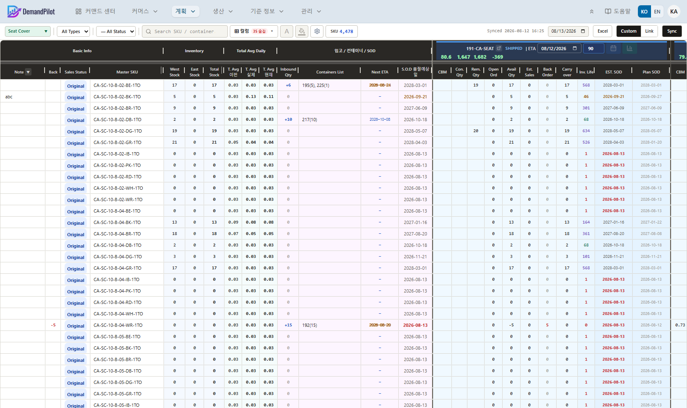
📊
Demand Planning 전체 화면
▲ Demand Planning – 메인 화면 (재고 현황 + 컨테이너 체인)
'" alt="Demand Planning 메인 화면">
▲ Demand Planning – 메인 화면 (재고 현황 + 컨테이너 체인)
① 상단 필터 & 검색
| 컨트롤 | 설명 |
|---|
| 제품 선택 드롭다운 | Seat Cover / Car Cover / Floor Mat / Accessories 중 하나를 선택해 해당 카테고리 SKU만 표시합니다. 선택에 따라 컨테이너 목록도 자동으로 필터링됩니다. |
| 제품 타입 | Original / Custom으로 SKU를 추가 분류합니다. |
| 긴급도 필터 | Critical Warning BackOrder 상태의 SKU만 추려볼 때 사용합니다. |
| 🔍 검색창 | SKU 이름 또는 컨테이너 번호로 실시간 필터링합니다. |
| Con Qty 필터 | 발주 수량이 입력된 SKU 또는 비어 있는 SKU만 표시합니다. 필터 해제는 All을 선택하세요. |
| 날짜 (As of) | 특정 날짜 기준 과거 재고 현황을 조회할 때 사용합니다. 기본값은 오늘입니다. |
| Sync 버튼 | 서버에서 최신 재고 데이터를 다시 불러옵니다. |
| Export 버튼 | 현재 필터가 적용된 데이터를 CSV로 내보냅니다. |
| Import 버튼 | Transit Stock(해상 운송 중 재고)을 엑셀로 일괄 업로드합니다. |
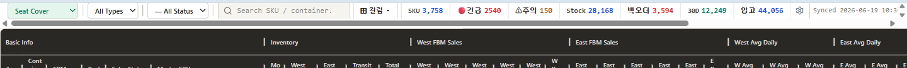
🔍
필터 & 상단 컨트롤 영역
'" alt="필터 영역">
SKU 파트 필터 (상품별)
선택한 제품 카테고리에 따라 Columns 패널의 SKU Filters 영역에 각기 다른 SKU 세부 필터 세트가 표시됩니다. 각 드롭다운은 복수 선택이 가능하며 AND 조건으로 조합됩니다.
② Columns 패널
상단 툴바의 ⊞ Columns ▾ 버튼을 클릭하면 패널이 열립니다. 패널은 세 영역(왼쪽: Quick Preset·Options·SKU Filters·Freeze Column, 가운데: Column Visibility, 오른쪽: Column Colors)으로 구성됩니다. 모든 설정은 브라우저 localStorage와 서버에 자동 저장되어 다음 접속 시에도 유지됩니다.
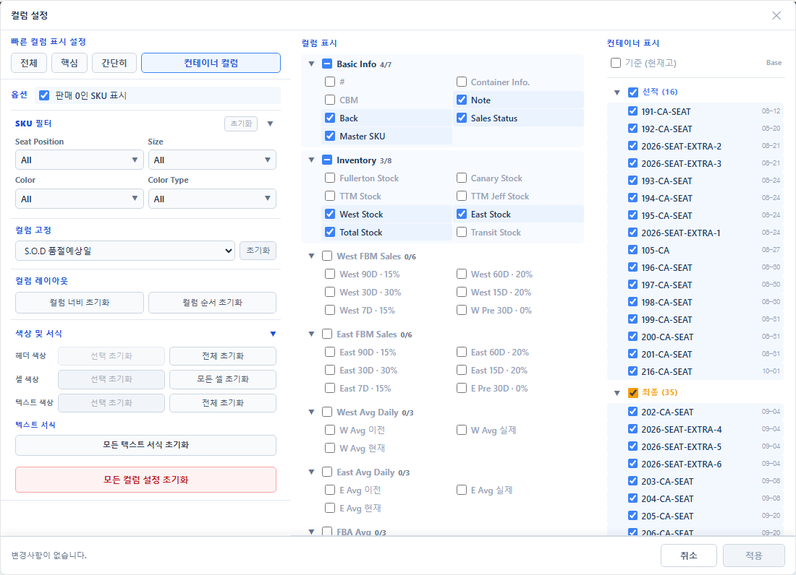
⊞
Columns 패널 전체 화면
'" alt="Columns 패널">
▲ Columns 패널 — 왼쪽(프리셋·SKU 필터·고정), 가운데(컬럼 표시), 오른쪽(색상)
Quick Preset — 빠른 컬럼 프리셋
4개의 버튼으로 자주 쓰는 컬럼 조합을 즉시 적용합니다. 현재 활성 프리셋은 파란 테두리로 표시됩니다.
| 버튼 | 표시되는 컬럼 그룹 | 비고 |
|---|
| All |
모든 컬럼 그룹 전체 표시 |
가장 넓은 뷰. 처음 접속 시 기본값. |
| Core |
Basic Info · Inventory · Sales 30D · Total Avg Daily · 입고/SOD + 컨테이너 컬럼 |
West/East 일별 판매 그룹 숨김. 핵심 지표 중심. |
| Compact |
Core에서 더 줄인 필수 컬럼만 표시
Back · Sales Status · Master SKU · West/East/Total Stock · T.Avg 이전/실제/현재 · Inbound Qty · Containers List · Next ETA · S.O.D 품절예상일 + 컨테이너 컬럼 |
Compact 모드 ON. Freeze Column을 S.O.D로 자동 초기화. 화면이 좁을 때 유용. |
| Container Columns |
컨테이너 서브컬럼 전체 ON/OFF 토글 |
나머지 컬럼은 그대로 유지. 파란 테두리 = 현재 컨테이너 컬럼 전체 표시 중. |
Column Visibility — 컬럼 그룹 & 개별 컬럼 선택
패널 가운데 영역에서 컬럼 그룹 단위 체크박스와 그룹 내 개별 컬럼 체크박스를 모두 제어할 수 있습니다. 그룹 헤더를 클릭해 접었다 펼 수 있으며, 그룹 옆의 숫자(예: 5/6)는 "표시 중 / 전체" 컬럼 수를 나타냅니다.
| 그룹명 | 포함 컬럼 | 비고 |
|---|
| Basic Info |
#(행 번호) · Container Info. · CBM · Back · Sales Status · Master SKU |
항상 표시. 숨길 수 없음. |
| Inventory |
Mode · West Stock · East Stock · Transit Stock · Total Stock |
재고 현황. Mode: 재고 계산 기준을 전환합니다. Onhand: 실물 재고 수량 기준. Available: Available Stock에서 배정된 수량이 차감된 가용 재고 기준. |
| West FBM Sales |
West 90D · 60D · 30D · 15D · 7D · W Pre 30D |
서부(FBM) 기간별 판매 수량. |
| East FBM Sales |
East 90D · 60D · 30D · 15D · 7D · E Pre 30D |
동부(FBM) 기간별 판매 수량. |
| West Avg Daily |
W Avg 이전 · W Avg 실제 · W Avg 현재 |
서부 일평균 판매 (이전 시즌 / 실측 / 현재 적용값). |
| East Avg Daily |
E Avg 이전 · E Avg 실제 · E Avg 현재 |
동부 일평균 판매. |
| FBA Avg |
FBA 실제 · FBA 현재 |
FBA 채널 일평균 판매. |
| Sales 30D |
W FBM 30D · E FBM 30D · FBA 30D · Total 30D |
채널별 최근 30일 판매 합산. |
| Total Avg Daily |
T.Avg 이전 · T.Avg 실제 · T.Avg 현재 |
전체 채널 합산 일평균. 자동계산(📅/📊)의 기준값. |
| 입고 / 컨테이너 / SOD |
Inbound Qty · Containers List · Next ETA · S.O.D 품절예상일 |
예정 입고 수량 합산, 컨테이너 목록, 다음 ETA, 재고 소진 예상일. |
컨테이너 컬럼
(컨테이너마다 공통 서브컬럼) |
Con. Qty · Rem. Qty · Open Orders · Avail Qty · Est. Sales · Back Order · Carry over · Inv. Life · EST. SOD · Plan SOD · CBM |
Container Columns 버튼 또는 개별 체크박스로 제어. 각 컨테이너 열 헤더 아래에 서브컬럼으로 표시. |
🚢 컨테이너 서브컬럼 설명
| Con. Qty | 발주 수량 (직접 편집 가능) |
| Rem. Qty | Available Stock 잔여 수량 |
| Open Orders | 미처리 주문 수량 |
| Avail Qty | 도착 후 가용 재고 예측 |
| Est. Sales | ETA까지 예상 판매량 |
| Back Order | 예상 재고 부족량 (빨간색) |
| Carry over | 이전 컨테이너에서 이월 재고 |
| Inv. Life | 해당 컨테이너 도착 기준 재고 유지 일수 |
| EST. SOD | 예상 재고 소진일 (ETA 기준) |
| Plan SOD | 계획 재고 소진일 |
| CBM | 해당 SKU Con. Qty × CBM/unit |
💡 활용 팁
- 그룹 체크박스를 끄면 하위 개별 컬럼이 모두 숨겨집니다.
- 그룹을 켠 뒤 개별 컬럼을 선택적으로 끌 수 있습니다.
- Compact 프리셋은 키보드 단축 작업 시 유용합니다. 좌우 스크롤이 거의 없어집니다.
- 컬럼 너비는 헤더 경계를 드래그해 조정하며, Reset Column Widths로 기본값으로 복원합니다.
- 설정은 서버에 저장되어 다른 컴퓨터에서 접속해도 유지됩니다.
SKU Filters — 상품별 SKU 파트 필터
선택한 제품 카테고리에 따라 Options 영역 하단에 다른 SKU 파트 필터 세트가 표시됩니다. 각 드롭다운은 복수 선택이 가능하며 AND 조건으로 조합됩니다. 오른쪽 상단 Reset으로 모든 SKU 필터를 한 번에 초기화합니다.
🪑 Seat Cover (SC) — 4개 필터
| 필터 라벨 | 설명 | 예시 |
|---|
| Seat Position | 시트 포지션 | F, B, FB |
| Size | 사이즈 | 001, 042, 083 |
| Color | 컬러 코드 | BK, GY, BE |
| Color Type | 컬러 타입 | 1TO, STI |
🚗 Car Cover (CC) — 5개 필터
| 필터 라벨 | 설명 | 예시 |
|---|
| Type | 제품 타입 구분 | SC, UV, HD |
| Fabric | 원단 재질 | 2L, 3L, 4L |
| Size | 사이즈 | S, M, L, XL |
| Color | 컬러 코드 | BK, SL, GY |
| Color Type | 컬러 타입 | 1TO, STI |
🧩 Floor Mat (FM) — 7개 필터
SKU 코드의 각 파트를 위치 기준(SKU 1~7)으로 분리해 필터링합니다.
| 필터 라벨 | 설명 (SKU 파트) |
|---|
| SKU 1 | Prefix |
| SKU 2 | Product Code |
| SKU 3 | Surface |
| SKU 4 | Material |
| SKU 5 | Vehicle Position |
| SKU 6 | Make |
| SKU 7 | Model # |
🎁 Accessories (AC) — 4개 필터
| 필터 라벨 | 설명 | 예시 |
|---|
| Seat | 시트 포지션 | F, B, FB |
| No. | 차종 모델 번호 | 001, 042, 083 |
| Color | 컬러 코드 | BK, GY, BE |
| Tone | 톤/변형 구분 | 1TO, STI |
ℹ️
각 드롭다운의 선택지는 현재 카테고리에 실제로 존재하는 값만 동적으로 표시됩니다. 목록 위의 All을 클릭하면 해당 필터를 초기화합니다.
ℹ️
Show Zero-Sales SKUs: Options 상단의 이 체크박스를 켜면 모든 기간에 판매가 0인 SKU도 테이블에 표시됩니다. 기본값은 OFF입니다.
Freeze Column — 컬럼 고정
선택한 컬럼까지 화면 좌측에 고정(핀)합니다. 테이블을 오른쪽으로 스크롤해도 고정 컬럼은 항상 보입니다.
| 항목 | 설명 |
|---|
| 드롭다운 | 현재 표시 중인 컬럼 목록에서 고정 끝점을 선택합니다. 선택한 컬럼 포함 이전의 모든 컬럼이 좌측에 고정됩니다. |
| 기본값 | S.O.D 품절예상일 — Basic Info 전체 + Inventory + 입고/SOD 그룹 컬럼까지 고정. Compact 프리셋 적용 시 자동으로 이 값으로 초기화됩니다. |
| Reset 버튼 | 기본값(S.O.D 품절예상일)으로 되돌립니다. |
💡
컨테이너 수가 많아 가로 스크롤이 길어질 때, Freeze Column을 Master SKU로 변경하면 SKU명만 고정하고 더 넓은 컨테이너 영역을 볼 수 있습니다.
Column Colors — 컬럼 색상 지정
패널 오른쪽 영역에서 특정 컬럼의 헤더·셀 배경색과 개별 셀 배경색을 지정할 수 있습니다. 시각적으로 중요한 컬럼을 강조하거나 팀 내 규칙을 색으로 구분할 때 활용합니다.
A. 컬럼 단위 색상 (Column Colors)
| 컨트롤 | 설명 |
|---|
컬럼 선택 드롭다운 (#) |
색상을 적용할 컬럼을 선택합니다. Base 컬럼 전체 + 각 컨테이너 헤더(container:이름) + 컨테이너 서브컬럼(con:id) 모두 선택 가능합니다. |
| Cell 색상 |
선택한 컬럼의 모든 데이터 셀 배경색. 컨테이너 헤더(container:) 선택 시 비활성화됩니다. |
| Header 색상 |
선택한 컬럼의 헤더 셀 배경색. 모든 컬럼에 적용 가능. |
| Reset Selected |
현재 드롭다운에서 선택한 컬럼의 색상만 초기화합니다. |
| Reset All |
모든 컬럼의 Cell·Header 색상을 한 번에 초기화합니다. |
| Reset Column Widths |
색상과 무관하게 컬럼 너비를 기본값으로 초기화합니다. (드래그로 조정된 너비 리셋) |
B. 개별 셀 색상 (Selected Cell Color)
그리드에서 특정 셀을 클릭하면 "SELECTED CELL COLOR" 섹션에 해당 셀 정보(행 SKU + 컬럼명)가 표시됩니다. 이 상태에서 색상을 선택하면 그 셀 하나만 배경색이 바뀝니다.
| 컨트롤 | 설명 |
|---|
| 색상 피커 |
클릭한 셀의 개별 배경색 지정. |
No cell 체크박스 |
체크 시 선택된 셀에 색상을 적용하지 않음(초기화와 동일). |
| Reset Selected |
현재 선택된 셀의 개별 색상을 초기화합니다. |
| Reset All Cells |
모든 개별 셀 색상을 한 번에 초기화합니다. |
💡
컬럼 색상과 셀 색상은 서로 독립적입니다. 컬럼 Cell 색상은 해당 컬럼 전체 셀에 적용되며, 개별 셀 색상을 지정하면 그 셀만 덮어씁니다. 컬럼 색상 위에 개별 셀 색상이 더 높은 우선순위를 가집니다.
③ Con. Qty 자동계산 버튼
각 컨테이너 헤더에는 2개의 자동계산 버튼이 있습니다. 모두 저장 전 미리보기 방식으로 동작하며, 클릭 후 수량을 확인하고 💾 Save를 눌러야 DB에 저장됩니다.
'" alt="자동계산 버튼">
▲ 컨테이너 헤더 자동계산 버튼 — ETA · 숫자입력 · 📅 · 📊
UI 배치: 컨테이너 헤더에는 ETA 날짜 → 90(목표 일수 입력) → 📅 → 📊 순서로 배치되어 있습니다.
숫자 입력칸(90)은 📅 버튼 전용이며, 📊은 이 값을 사용하지 않습니다.
| 버튼 | 기능 | 목표 일수 결정 | 언제 사용? |
|---|
| 📅 |
고정 목표 계산
발주량 = ROUNDUP((일판매 × 목표일 + BackOrder − 잔여재고) ÷ step) × step
※ BackOrder: 이전 컨테이너에서 이월되는 누적 백오더 수량 · 잔여재고: 이전 컨테이너 이월 재고 − ETA 전 소진 예상량 = max(0, 이월재고 − 일판매 × gap일수) |
헤더의 숫자 입력칸 값 사용 (기본 90일) |
모든 SKU에 동일한 목표 일수를 적용할 때 |
| 📊 |
구간별 목표 계산
클릭 시 다이얼로그가 열리며, 일판매량 구간마다 다른 목표 일수를 지정 |
다이얼로그에서 구간별 설정 (기본: ≥10개→90일, ≥5개→80일, ≥3개→70일, 나머지→60일) |
판매량 많은 SKU는 길게, 적은 SKU는 짧게 차등 적용할 때 |
💡
저장 전 미리보기: 두 버튼 모두 클릭 즉시 수량이 반영되지만 DB에는 저장되지 않습니다. 확인 후 💾 Save를 눌러야 최종 저장됩니다. 되돌리려면 ↺ Reset을 누르세요. Reset은 DB에 저장된 마지막 값으로 되돌립니다.
📅 버튼 목표 일수 변경 방법
1
버튼 왼쪽의 숫자 입력칸 클릭
기본값은 90입니다. 원하는 일수를 입력합니다 (예: 60, 120).
2
📅 버튼 클릭
입력한 일수를 기준으로 모든 SKU의 발주 수량이 계산됩니다.
3
💾 Save 클릭
결과가 맞으면 Save를 눌러 DB에 저장합니다.
📊 버튼 구간별 목표 설정 방법
1
📊 버튼 클릭
다이얼로그가 열리며 현재 구간 설정이 표시됩니다.
2
구간 설정 확인 및 수정
Min Avg Sales(일판매 최솟값)와 Target Days(목표 재고 일수)를 원하는 값으로 수정합니다. +로 구간 추가, ×로 구간 삭제 가능합니다.
| 기본 구간 | Min Avg Sales | Target Days |
|---|
| 구간 1 | ≥ 10개/일 | 90일 |
| 구간 2 | ≥ 5개/일 | 80일 |
| 구간 3 | ≥ 3개/일 | 70일 |
| 구간 4 (기본) | ≥ 0개/일 | 60일 |
3
Apply 클릭
각 SKU의 일판매량에 해당하는 구간의 목표 일수로 발주 수량이 계산됩니다.
4
💾 Save 클릭
결과가 맞으면 Save를 눌러 DB에 저장합니다.
✅
📊 구간 설정은 세션 동안 유지됩니다. 한 번 설정한 구간은 페이지를 벗어나기 전까지 다른 컨테이너의 📊를 눌러도 동일하게 적용됩니다. 컨테이너마다 다른 구간을 쓰려면 매번 다이얼로그에서 수정하세요.
④ 컨테이너 표시 조건
Demand Planning의 컨테이너 열은 모든 상태의 컨테이너가 표시되지 않습니다. 아래 규칙에 따라 필터링됩니다.
| 컨테이너 상태 | Demand Planning 표시 | 비고 |
|---|
| Final List Sent | ✅ 항상 표시 | 공장 발송 완료 상태 |
| Packing List Rcvd | ✅ 항상 표시 | 패킹 리스트 수령 상태 |
| Draft | ⬜ Draft 포함 토글 ON 시만 표시 | 상단 필터에서 수동 활성화 필요 |
| Complete | ❌ 표시 안 됨 | 입고 완료 처리된 컨테이너는 계획 대상에서 제외 |
💡
Complete 컨테이너가 목록에 없다면? Container Planning 페이지에서 해당 컨테이너의 상태를 확인하세요. 상태가
Complete이면 입고 완료 처리된 것이며, Demand Planning과 SKU Planning 재고 및 입고 탭 모두에서 표시되지 않습니다. 자세한 내용은
Container Planning > Complete 상태 설명을 참고하세요.
⑤ 컨테이너 헤더 더블클릭 — Container Planning 바로가기
Demand Planning 그리드의 컨테이너 헤더(컨테이너 번호 영역)를 더블클릭하면 해당 컨테이너의 Container Planning 상세 페이지가 새 탭으로 열립니다.
| 항목 | 설명 |
|---|
| 이동 URL | /forecast/planning/container-planning?containerId={id} — 해당 컨테이너가 자동 선택된 상태로 열립니다. |
| 커서 힌트 | 헤더에 마우스를 올리면 커서가 pointer로 변경되어 클릭 가능함을 나타냅니다. |
| 미저장 컨테이너 | DB에 아직 저장되지 않은 컨테이너는 이동 불가 — "This container does not have a saved container ID yet." 알림이 표시됩니다. |
💡
발주 수량을 검토하다가 컨테이너 상세를 확인하고 싶을 때, 페이지를 직접 이동하지 않고 더블클릭으로 바로 열 수 있어 편리합니다.
⑥ Planning Settings — Seasonal Factors
상단 툴바의 ⚙ 아이콘(Seasonal factor settings)을 클릭하면 월별 계절 배수를 설정하는 팝오버가 열립니다. 이 배수는 컨테이너 ETA 월의 예상 판매량과 재고 소진 일수(Inv. Life) 계산에 자동 적용됩니다.
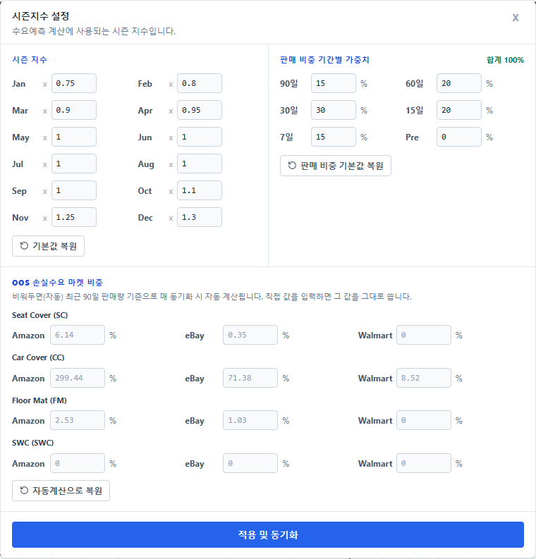
📅
Seasonal Factors 설정 팝오버
'" alt="Seasonal Factors 설정">
▲ Planning Settings — Seasonal Factors 팝오버 (1월~12월 배수 설정)
| 항목 | 설명 |
|---|
| 월별 배수 입력 |
1월~12월 각각의 배수를 직접 입력합니다. 1.0이 기준이며, 수치가 높을수록 해당 월의 판매량이 많다고 가정해 더 많은 재고를 계획합니다. |
| Restore Defaults |
모든 월의 배수를 기본값으로 초기화합니다. |
| 자동 저장 |
값을 변경하면 즉시 브라우저에 저장되고, 1.5초 후 서버에도 동기화됩니다. 다른 기기에서 접속해도 설정이 유지됩니다. |
| 월 | 기본 배수 | 월 | 기본 배수 |
|---|
| 1월 (Jan) | 0.75 | 7월 (Jul) | 1.00 |
| 2월 (Feb) | 0.80 | 8월 (Aug) | 1.00 |
| 3월 (Mar) | 0.90 | 9월 (Sep) | 1.00 |
| 4월 (Apr) | 0.95 | 10월 (Oct) | 1.10 |
| 5월 (May) | 1.00 | 11월 (Nov) | 1.25 |
| 6월 (Jun) | 1.00 | 12월 (Dec) | 1.30 |
💡
계산 예시: 일판매 10개/일인 SKU의 컨테이너 ETA가 11월이라면, 계절 배수 1.25가 적용되어 조정 일판매 = 10 × 1.25 = 12.5개/일로 계산됩니다. 재고 소진 일수는 이 조정값 기준으로 산출됩니다.
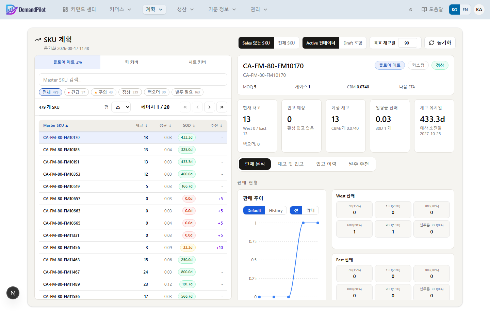
🔍
SKU Planning 전체 화면
'" alt="SKU Planning">
▲ SKU Planning – 좌측 SKU 브라우저 + 우측 4탭 상세 분석
화면 전체 구성
📋 좌측 패널 – SKU 브라우저 (580px)
- SC / CC / FM 제품 탭 전환 (건수 뱃지 표시)
- 검색창: SKU명·컨테이너 번호·판매 상태 실시간 필터
- 긴급도별 필터 뱃지 (All / Critical / Watch / High / Low / Order Required)
- SKU 목록: 재고·일판매량·SOD·권장수량 열람 및 정렬
📊 우측 패널 – SKU 상세 분석
- SKU 헤더: 이름·제품명·상태·MOQ·CBM·다음 ETA
- KPI Strip: 5개 핵심 지표 카드
- 판매 분석 탭: 기간별 판매 추이 차트
- 재고 및 입고 탭: 재고 커버리지·입고 컨테이너 목록
- 입고 이력 탭: 과거 입고 이력 전체 조회 (컨테이너 단위)
- 컨테이너 추천 탭: 권장 발주 수량 + What-If 시뮬레이션
상단 전역 컨트롤
| 컨트롤 (화면 레이블) | 설명 |
|---|
| 제품 탭 (SC / CC / FM) | Seat Cover · Car Cover · Floor Mat 중 하나를 선택합니다. 탭 우측에 해당 제품의 총 SKU 수가 표시됩니다. |
| Sales 있는 SKU / 전체 SKU | 토글. Sales 있는 SKU: 최근 판매 실적이 있는 SKU만 표시. 전체 SKU: 판매 이력 없는 SKU까지 모두 표시. |
| Active 컨테이너 / Draft 포함 | 토글. Active 컨테이너: 확정된 컨테이너 기준 재고 계산. Draft 포함: 초안(Draft) 컨테이너 입고량까지 포함하여 계산. |
| 목표 재고일 (1–365) | 컨테이너 추천 탭의 목표 재고 일수를 설정합니다. 이 값이 커질수록 권장 발주 수량이 늘어납니다. KPI의 재고 유지일 기준이 됩니다. |
| 언어 전환 (KO / EN) | 화면 레이블을 한국어·영어로 전환합니다. localStorage에 저장됩니다. |
| 🔄 동기화 | 서버에서 최신 수요 계획 데이터를 다시 불러옵니다. |
① 좌측 SKU 브라우저 패널
검색 및 필터 뱃지
검색창에 SKU 이름, 컨테이너 번호, 또는 판매 상태 일부를 입력하면 목록이 실시간으로 좁혀집니다. 검색창 아래에는 긴급도별 필터 뱃지가 있어 클릭 한 번으로 특정 상태의 SKU만 볼 수 있습니다.
| 필터 뱃지 | 조건 |
|---|
| All | 전체 SKU (필터 없음) |
| Critical | 긴급도 = Critical인 SKU (재고 소진 임박) |
| Watch | 긴급도 = Watch인 SKU (재고 주의 필요) |
| High | 긴급도 = Healthy인 SKU (재고 양호) |
| Low | Back Order(재고 부족) 수치가 음수인 SKU |
| Order Required | 권장 발주 수량(Rec. Qty) > 0인 SKU |
SKU 목록 컬럼 (한국어 모드 기준)
| 컬럼 헤더 | 내용 |
|---|
| Master SKU | SKU 고유 식별자. 클릭 시 우측 패널에 상세 정보가 표시됩니다. 컬럼 헤더 클릭으로 알파벳 정렬 가능. |
| 재고 | 현재 총 재고 수량 (West + East). 클릭 시 오름차순/내림차순 정렬. |
| 평균 | 현재 일평균 판매량, 소수점 2자리. 클릭 시 정렬. |
| SOD | 재고 소진 예정일까지 남은 일수 뱃지. D-5처럼 표시. 클릭 시 정렬. |
| 추천 | 권장 발주 수량. 0 초과 시 보라색으로 강조. 클릭 시 정렬. |
💡
가상 스크롤링: SKU 목록은 36px 행 높이의 가상 스크롤로 구현되어 수천 개의 SKU도 빠르게 렌더링됩니다. 목록이 느리게 로드될 경우 상단 제품 탭이나 검색으로 범위를 좁혀보세요.
② KPI 요약 카드 (5개)
SKU를 선택하면 탭 위에 5가지 핵심 지표가 카드 형태로 표시됩니다.
📦 현재 재고
현재 창고 총 재고. 하단에 West / East 창고별 분리 수량이 표시됩니다.
🚢 입고
입고 예정 총 수량. 부제목으로 Draft 포함 여부와 가장 가까운 다음 ETA 날짜가 표시됩니다. 입고 예정이 없으면 "활성 입고 없음" 표시.
📈 예상 재고
현재 재고 + 입고 예정 + 백오더 영향을 합산한 예상 보유 재고. 부제목에 SKU의 CBM/개 값이 표시됩니다.
📊 일평균 판매
현재 일평균 판매 속도. 부제목에 최근 30일 총 판매량(단위: 개)이 표시됩니다.
⏱️ 재고 유지일
예상 재고 유지 일수와 예상 소진일(SOD). 입고가 있을 경우 "현재 재고만" 일수(입고 제외 시 몇 일인지)도 긴급도 색상으로 표시합니다.
⚠️
Draft 포함 토글 영향: 상단에서 Draft 포함을 켜면 입고·예상 재고·재고 유지일 수치가 모두 Draft 컨테이너 입고량을 포함한 값으로 바뀝니다. 확정된 입고만 보려면 Active 컨테이너로 토글을 두세요.
③ 판매 분석 탭
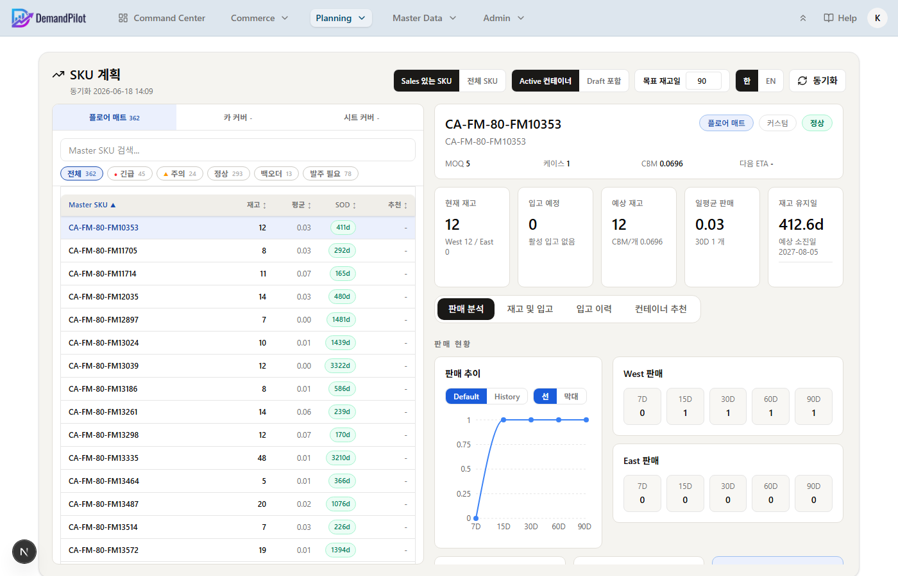
📈
판매 분석 탭 – 기간별 판매 추이 차트
'" alt="판매 분석 탭">
▲ 판매 분석 탭 – 기간별 판매 추이 차트 (Default View)
선택한 SKU의 기간별 판매 데이터를 차트와 수치 표로 확인합니다. Default View와 History View 두 가지 모드가 있습니다.
기본 보기 – 기간별 요약
| 항목 (화면 레이블) | 설명 |
|---|
| 판매 추이 차트 | 7D·15D·30D·60D·90D 기간별 판매량을 막대 또는 꺾은선 차트로 시각화. 차트 우측 상단 아이콘으로 선 / 막대 전환 가능. |
| West 판매 표 | 서부 창고 기준 7D / 15D / 30D / 60D / 90D 판매량 5행 표. |
| East 판매 표 | 동부 창고 기준 동일 구조 5행 표. West 판매와 나란히 배치되어 지역별 비교 용이. |
| 평균 카드 3개 | 이전 평균(이전 기간 일평균) · 실제 평균(실제 평균) · 현재 평균(현재 일평균, 파란색 강조) |
히스토리 보기 – 사용자 정의 기간
히스토리 보기 토글을 켜면 날짜 범위 입력 필드가 나타납니다.
| 항목 | 설명 |
|---|
| 날짜 범위 입력 | 시작일 ~ 종료일을 직접 입력합니다. 2024-Today 버튼으로 2024년부터 오늘까지 범위를 한 번에 설정할 수 있습니다. |
| 집계 단위 (일 / 주 / 월) | 일 / 주 / 월 중 선택. 선택에 따라 차트 X축 구간이 변경됩니다. |
| 범위 요약 | 선택 기간의 총 판매량과 일평균이 우측에 표시됩니다. |
④ 재고 및 입고 탭
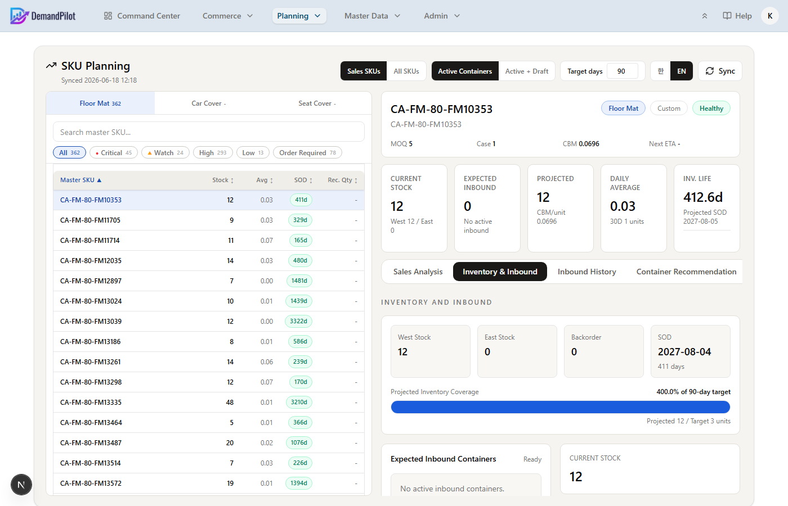
🏭
재고 및 입고 탭 – 재고 커버리지 + 입고 컨테이너 목록
'" alt="재고 및 입고 탭">
▲ 재고 및 입고 탭 – 재고 커버리지 진행바 + 입고 컨테이너 카드
현재 재고가 목표 일수 대비 얼마나 확보되어 있는지, 어떤 컨테이너가 언제 입고 예정인지 한눈에 확인합니다.
재고 요약 카드 (4개)
🏬 West 재고 / East 재고
서부·동부 창고별 현재 재고 수량. Draft 포함 시 상단에 Draft 뱃지와 Draft 합산 수량이 주황색으로 표시됩니다.
⚠️ 백오더 / SOD
백오더: 현재 재고 부족 수량 (음수면 빨간색 표시). SOD: 재고 소진 예정일과 D-Day 카운트다운.
예상 재고 확보율 진행바
상단 헤더 레이블: "예상 재고 확보율"
| 항목 | 설명 |
|---|
| 확보율 퍼센트 | 목표 재고일 대비 현재 예상 재고의 비율. 예: 90일 목표의 78%. 100% 미만이면 주황, 100% 이상이면 초록 진행바. |
| 예상 / 목표 수치 | 진행바 아래에 예상 {X} / 목표 {Y} 개 형태로 구체적인 수량 비교가 표시됩니다. |
| 목표일 기준 | 상단 전역 컨트롤의 목표 재고일 값이 여기에 그대로 반영됩니다. |
입고 컨테이너 목록
해당 SKU가 포함된 모든 입고 예정 컨테이너를 카드 형태로 나열합니다.
| 항목 (화면 레이블) | 설명 |
|---|
| 컨테이너 이름 | 컨테이너 번호. Draft 상태이면 Draft 뱃지가 함께 표시되며 카드 테두리가 주황색으로 강조됩니다. |
| 상태 | 컨테이너의 현재 상태 (Draft / Final List Sent / Packing List Rcvd / Complete). |
| ETA | 도착 예정일. 가까운 순서로 정렬됩니다. |
| 수량 | 이 SKU에 배정된 입고 수량. |
| CBM | 이 SKU가 차지하는 CBM 부피. |
| 카드 클릭 | 해당 컨테이너의 Container Planning 상세 페이지로 바로 이동합니다. |
💡
Draft 컨테이너 확인: 상단 토글을 Draft 포함으로 설정하면 아직 확정되지 않은 Draft 컨테이너도 목록에 나타납니다. Draft 포함 여부는 예상 재고 확보율 진행바 수치에도 영향을 줍니다.
우측 요약 카드 (4개)
입고 / 입고 (Draft 포함)
입고 예정 총 수량. Draft 포함 설정이면 "(Draft 포함)" 표기.
예상 재고
현재 재고 + 입고 + 백오더 합산 예상 재고.
잔여 / 오류
Available Stock에 등록된 여유 재고(잔여)와 미스테이크 오더(오류) 수량.
⑤ 입고 이력 탭
'" alt="입고 이력 탭">
▲ 입고 이력 탭 – 요약 카드 4개 + 컨테이너별 이력 목록
선택한 SKU의 과거 입고 이력 전체를 컨테이너 단위로 조회합니다. 진행 중인 입고뿐 아니라 완료된 이력까지 한눈에 볼 수 있어, 재발주 주기와 수량 패턴을 파악하는 데 활용합니다.
요약 카드 (4개)
🚢 현재 입고 중
현재 해상 운송 중(Shipped) 또는 패킹리스트 수신(Packing Received) 상태의 컨테이너에 포함된 수량 합계.
✅ 완료된 입고
Complete 상태로 전환된 컨테이너의 누적 입고 수량.
📋 잔여 (Remaining)
Available Stock에 등록된 잔여 재고 수량.
⚠️ 미스테이크 (Mistake)
오발주·취소 등으로 발생한 Mistake Order 수량.
이력 목록 컬럼
| 컬럼 | 설명 |
|---|
| Container Number | 컨테이너 번호. 클릭하면 Container Planning의 해당 컨테이너 상세 페이지로 이동합니다. |
| Status | 컨테이너 현재 상태를 색상 뱃지로 표시 (Draft · Final List Sent · Packing List Rcvd · Complete). |
| ETA | 예상 도착일. |
| Qty | 해당 컨테이너에 배정된 이 SKU의 수량. |
| Done / Changed | Complete 전환일 또는 마지막 수정일. |
💡
Container Number 링크를 클릭하면 Container Planning 페이지의 해당 컨테이너로 직접 이동합니다. 이력 조회와 상세 수정을 한 번에 할 수 있습니다.
⑥ 컨테이너 추천 탭
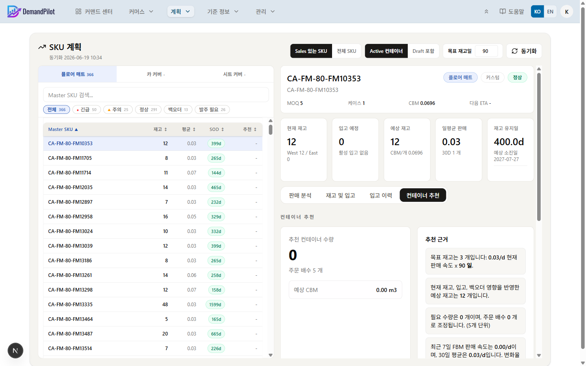
🛒
컨테이너 추천 탭 – 권장 발주 수량 + What-If 시뮬레이션
'" alt="컨테이너 추천 탭">
▲ 컨테이너 추천 탭 – 권장 발주량 · 시뮬레이션 · 상세 계산 내역
목표 재고 일수를 기준으로 권장 발주 수량을 산출하고, 임의의 수량과 ETA를 입력해 시나리오를 비교합니다.
추천 컨테이너 수량
| 항목 (화면 레이블) | 설명 |
|---|
| 추천 컨테이너 수량 (대형 숫자) | MOQ·발주 배수(주문 배수)를 자동 적용한 권장 컨테이너 입고 수량. 보라색 대형 텍스트로 표시. |
| 주문 배수 | 적용된 발주 배수. 예: 5 단위 → 5, 10, 15 … |
| 예상 CBM | 권장 수량을 적재할 경우 필요한 CBM 부피 (단위: m³). |
권장 수량 산출 근거 (4줄 설명)
권장 박스 우측에 4가지 계산 근거가 불릿 형태로 표시됩니다.
① 목표 재고
일판매 × 목표 일수 = 확보해야 할 목표 재고량
② 예상 재고
현재 재고 + 입고 예정 + 백오더 영향
③ 실제 필요량
목표 재고 − 예상 재고, 발주 배수 단위로 올림(ROUNDUP)
④ 속도 컨텍스트
7D 평균 vs 30D 평균 비교 및 변화율(%). 최근 판매가 가속/감속 중인지 표시.
What-if 시뮬레이션
권장 수량이 아닌 다른 수량·ETA로 발주했을 때 어떤 결과가 나오는지 미리 계산해 봅니다.
| 입력 항목 (화면 레이블) | 설명 |
|---|
| 제안 컨테이너 수량 | 실제 발주하려는 수량을 입력합니다. 주문 배수 단위로 증감 가능. 초기값은 권장 수량. |
| 가정 ETA | 예상 도착일을 날짜 picker로 설정합니다. 초기값은 오늘부터 90일 후. |
| 추천값 초기화 | 입력값을 시스템 권장 수량·기본 ETA로 초기화합니다. |
시뮬레이션 결과 (5개 수치)
ETA 전 수요
ETA 이전까지 판매될 예상 수량 (일판매 × 남은 일수).
ETA 전 백오더
ETA 도착 전에 재고가 먼저 소진될 경우 발생하는 백오더 수량. 0 초과면 위험 색상으로 강조.
ETA 후 백오더
ETA 도착 후 상태 기준 백오더 잔량. 0 초과면 여전히 재고 부족을 의미.
필요 CBM
입력한 발주 수량을 적재하는 데 필요한 CBM.
예상 SOD
시뮬레이션 조건 기준의 재고 소진 예정일.
비교 라인: 시뮬레이션 결과 아래에 현재 SOD | 시뮬레이션 SOD | ETA 후 잔여 3가지 수치가 한 줄로 비교 표시되어 현재 상황 대비 개선폭을 즉시 파악할 수 있습니다.
계산 내역 (4열 그리드)
시뮬레이션 결과 아래에 8가지 계산 구성 요소가 상세히 표시됩니다.
| 항목 (화면 레이블) | 설명 |
|---|
| 목표 일수 | 상단 컨트롤에서 설정한 목표 재고 일수 |
| 일평균 판매 | 현재 일평균 판매 속도 |
| 목표 재고 | = 일평균 판매 × 목표 일수 |
| 현재 재고 | 현재 창고 총 재고 |
| 입고 / 입고 (Draft 포함) | 입고 예정 총 수량 (Draft 포함 여부 표기) |
| 백오더 영향 | 현재 백오더 수량 (음수이면 재고 감소 요인) |
| 예상 재고 | = 현재 재고 + 입고 + 백오더 영향 |
| 필요 수량 | = 목표 재고 − 예상 재고 (주문 배수 올림 전 원시 필요량) |
✅
MOQ & 주문 배수 자동 적용: 필요 수량이 MOQ보다 작으면 자동으로 MOQ를 적용합니다. 최종 권장 수량은 항상 주문 배수의 배수로 올림(ROUNDUP) 처리됩니다. SKU Master에 MOQ·주문 배수가 올바르게 설정되어 있어야 합니다.
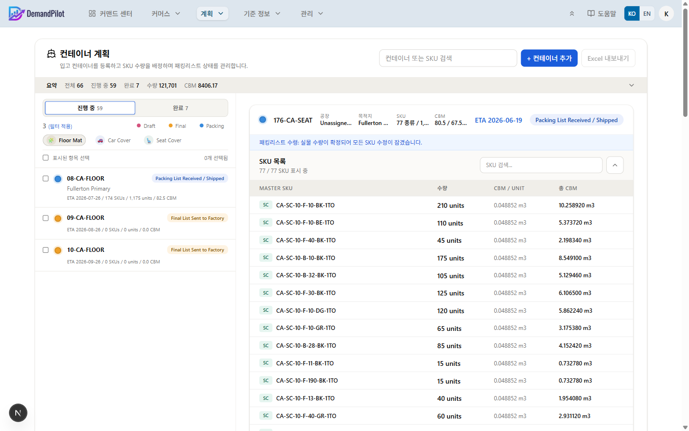
📋
컨테이너 상세 화면 (SKU 목록)
'" alt="컨테이너 상세">
▲ Container Planning – Draft 필터 선택 · 202-CA-SEAT 컨테이너 선택 상태
컨테이너 상태 흐름
Draft
→
Final List Sent
→
Packing List Rcvd
→
Complete
① 컨테이너 등록하기
1
+ Add Container 클릭
화면 우측 상단의 + Add Container 버튼을 클릭합니다.
2
기본 정보 입력
컨테이너 번호(예: 182-CA-SEAT), ETA(도착 예정일), 목적지 창고, CBM 용량(기본 80)을 입력합니다.
3
SKU 추가
Master SKU를 입력하고 수량을 등록합니다. 엑셀 파일로 일괄 업로드도 가능합니다 (Import Excel).
4
Available Stock 배정 (선택)
창고에 대기 중인 여유 재고를 이 컨테이너에 배정하려면 Available Stock 버튼을 사용합니다.
5
상태 변경
공장에 발주서를 보냈으면 Final List Sent으로 변경합니다. 패킹 리스트를 받으면 Packing List Rcvd로 변경하세요.
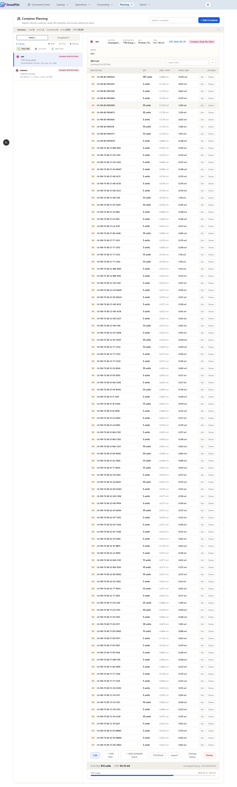
🚢
Container Planning 전체 화면
'" alt="Container Planning">
▲ 컨테이너 등록 – + Add Container 클릭 시 나타나는 New Container Registration 입력 화면
② 컨테이너 수정하기
Draft 상태의 컨테이너는 기본 정보와 SKU 목록을 자유롭게 수정할 수 있습니다.
기본 정보 수정
| 항목 | 설명 |
|---|
| 컨테이너 번호 | Container Details 섹션에서 직접 클릭해 수정합니다. |
| ETA (도착 예정일) | 날짜 선택기로 변경합니다. |
| 목적지 창고 | 드롭다운에서 창고를 선택합니다. |
| CBM 용량 | 컨테이너 총 용량(기본 80 m³)을 수정합니다. |
| 공장 / 메모 | 공장명 및 패킹 지시사항 등 메모를 자유롭게 기입합니다. |
SKU 추가
1
Master SKU 입력
SKU Order Quantities 섹션 하단의 Master SKU 검색창에 SKU 코드를 입력합니다.
2
수량 입력
Qty 칸에 발주 수량을 입력합니다. CBM/Unit은 SKU 마스터에서 자동 조회됩니다.
3
+ Add 클릭
+ Add 버튼을 클릭하면 SKU 목록에 추가됩니다. 여러 SKU를 한 번에 등록하려면 CSV/Excel Import 버튼으로 엑셀 파일을 업로드합니다.
SKU 삭제 (일괄 삭제)
Draft 상태의 컨테이너에서만 사용 가능합니다. SKU 목록 좌측 체크박스로 항목을 선택한 뒤 Delete Selected (N) 버튼을 클릭합니다.
| 항목 | 설명 |
|---|
| 개별 선택 | 각 행 왼쪽 체크박스를 클릭해 개별 선택. |
| 전체 선택 | 헤더 체크박스(Select visible SKUs)로 현재 검색 결과의 전체 SKU를 선택. |
| 삭제 조건 | Available Stock이 배정된 SKU는 삭제 불가 — 먼저 배정 해제 후 삭제. |
| 확인 다이얼로그 | 버튼 클릭 시 "Delete N selected SKU(s)?" 확인창이 표시되며 OK 후 삭제 진행. |
| 적용 상태 | Draft 전용. Final List Sent 이상 상태에서는 버튼이 표시되지 않음. |
⚠️
Available Stock(잔여/Mistake)이 배정된 항목은 삭제 전에 + Add Available Stock에서 배정을 먼저 해제해야 합니다.
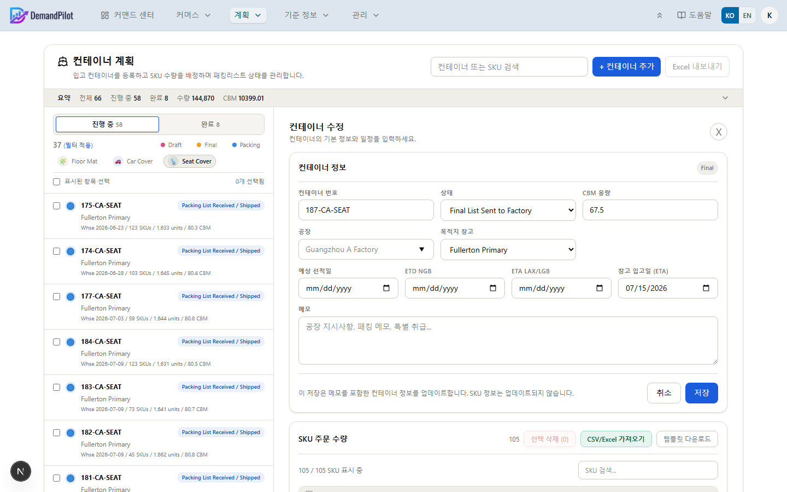
✏️
컨테이너 수정 화면
'" alt="컨테이너 수정">
▲ 컨테이너 수정 – 기본 정보 및 SKU 추가·삭제 화면 (202-CA-SEAT · Draft 상태)
③ 상태별 주의사항
| 상태 | 편집 가능 항목 | Demand Planning 표시 여부 | 비고 |
|---|
| Draft |
모든 항목 편집 가능 |
✅ (Draft 포함 토글 ON 시) |
초안 단계. 자유롭게 수정하세요. |
| Final List Sent |
수량만 편집 가능 |
✅ 항상 표시 |
공장 발송 후. SKU 추가/삭제 불가. |
| Packing List Rcvd |
읽기 전용 |
✅ 항상 표시 |
패킹 리스트 수신 후. 변경 불가. |
| Complete |
읽기 전용 |
❌ 표시 안 됨 |
입고 완료. Demand Planning에서 완전 제외. 삭제는 Planner/Admin만 가능. |
⚠️
컨테이너 전체 삭제: 컨테이너를 완전히 삭제하려면 Planner 또는 Admin 권한이 필요합니다. 컨테이너 상세 패널 하단에서 삭제 버튼을 찾을 수 있습니다. 삭제된 컨테이너와 하위 SKU 수량은 복구할 수 없으므로 신중하게 사용하세요. 잘못 입력된 컨테이너를 숨기려면 삭제 대신 Draft 상태를 유지하는 것을 권장합니다.
④ Complete 상태와 Demand Planning 표시 규칙
⚠️
Complete 상태 컨테이너는 Demand Planning에 표시되지 않습니다.
컨테이너를 Complete로 변경하는 순간, 해당 컨테이너는 Demand Planning의 컨테이너 열 목록에서 즉시 사라지고, SKU별 발주 계획(Con. Qty) 계산에서도 제외됩니다.
시스템이 이렇게 동작하는 이유는 입고가 완료된 재고는 이미 창고 실재고(Current Stock)에 반영되었기 때문입니다. 이후 발주 계획은 갱신된 실재고 수치를 기준으로 다시 계산하면 됩니다.
🚫 Demand Planning에서 제외되는 조건
- 상태 = Complete
- 컨테이너 열이 사라지고 Con. Qty 계산에서 제외
- 자동계산 버튼(📅 / 📊) 결과에도 미반영
- SKU Planning > 재고 및 입고 탭의 입고 컨테이너 목록에도 미표시
✅ Demand Planning에 표시되는 조건
- 상태 = Final List Sent
- 상태 = Packing List Rcvd
- 상태 = Draft (Draft 포함 토글 ON 시에만)
상태 전환 시 Demand Planning 변화 흐름
Draft
→
Final List Sent
→
Packing List Rcvd
→
Complete ❌
Complete로 변경되는 순간 Demand Planning 컨테이너 목록에서 제거됩니다.
| 상황 | 권장 조치 |
|---|
| 실제 입고가 완료된 컨테이너 |
Complete로 변경 → 창고 재고에 반영되었으므로 Demand Planning에서 자동 제외. 이후 재고 현황은 Demand Planning의 현재 재고(Stock) 수치로 확인. |
| 아직 창고 입고 전인데 Complete로 잘못 변경한 경우 |
Container Planning에서 해당 컨테이너를 찾아 상태를 Packing List Rcvd로 되돌리면 Demand Planning에 즉시 다시 표시됩니다. |
| Complete 컨테이너 내역을 다시 보고 싶은 경우 |
Container Planning 페이지에서 직접 조회합니다. Demand Planning과 SKU Planning에서는 Complete 컨테이너가 표시되지 않습니다. |
✅
올바른 Complete 처리 순서:
- 실물 입고 확인 후 Container Planning에서 해당 컨테이너 클릭
- 상태를 Complete로 변경
- 외부 재고 DB 동기화 후 Demand Planning에서 🔄 Sync 클릭
- 현재 재고(Stock) 수치가 갱신된 것을 확인하고 발주 계획을 재검토
⚠️
CBM 초과 주의: 화면 상단에 현재 CBM 사용률이 표시됩니다. 80 CBM을 초과하지 않도록 주의하세요.
⑤ 엑셀(Excel) Export
Container Planning에는 두 가지 Export 기능이 있습니다. 목적에 따라 구분해서 사용합니다.
📊 다중 컨테이너 통합 Export
여러 컨테이너를 선택해 SKU별 수량을 한 파일에 비교·정리. Final Order 정리 시 사용.
버튼: 상단 헤더 Excel Export (N)
📋 단일 컨테이너 Packing List Export
선택한 컨테이너 한 개의 SKU 목록을 패킹 리스트 형식으로 내보내기.
버튼: 컨테이너 상세 하단 CSV/Excel
A. 다중 컨테이너 통합 Export (Excel Export)
복수의 컨테이너를 동시에 선택해 하나의 엑셀 파일로 내보냅니다. 컨테이너별 발주 수량을 한눈에 비교하거나 공장에 Final Order를 전달할 때 사용합니다.
1
컨테이너 선택
컨테이너 목록 좌측의 체크박스를 클릭해 Export할 컨테이너를 선택합니다. 여러 개 동시 선택 가능합니다.
목록 하단의 Select visible 체크박스를 사용하면 현재 필터 조건에 맞는 컨테이너 전체를 한 번에 선택·해제할 수 있습니다. 선택된 개수는 옆에 N selected로 표시됩니다.
2
Excel Export 버튼 클릭
상단 헤더 우측의 Excel Export (N) 버튼(파란색 테두리)을 클릭합니다. N은 현재 선택된 컨테이너 수입니다. 0개 선택 시 버튼이 비활성화됩니다.
3
파일 다운로드
엑셀 파일이 자동으로 다운로드됩니다.
파일명 규칙
{제품명} ETA {M.DD.YYYY} ({첫 컨테이너} - {마지막 컨테이너} FINAL).xlsx
예시: Seat Cover ETA 8.15.2026 (SC-001 - SC-003 FINAL).xlsx
| 파일명 요소 | 결정 방식 |
|---|
| 제품명 | 선택된 컨테이너가 단일 제품군(Seat Cover, Car Cover 등)이면 해당 제품명 사용. 복수 제품군이 섞이면 "Mixed Product"로 표시. |
| ETA | 선택된 컨테이너 중 가장 이른 ETA 날짜를 M.DD.YYYY 형식으로 표기. |
| 컨테이너 범위 | 컨테이너 번호 기준 정렬 후 첫 번째~마지막 번호. 단일 선택 시 동일하게 표시. |
엑셀 파일 내용 (시트명: "Final Order")
| 컬럼 | 내용 |
|---|
| Product Type | Custom SKU이면 "Custom" 표시. 일반 SKU는 빈 칸. |
| Master SKU | SKU 코드. 알파벳 순으로 정렬. |
| [컨테이너 번호들] | 선택한 컨테이너마다 열 하나씩 생성. 해당 SKU의 컨테이너별 수량이 입력됨. 없으면 0. |
| Remaining Stock | Available Stock의 Remaining 재고 합산 수량. Export 시점에 서버에서 실시간 조회. |
| Total 행 | 각 컨테이너 열의 합계 수량. |
💡
컨테이너 목록 상단의 Status / Product 필터를 먼저 적용한 뒤 "Select visible"을 사용하면 특정 제품군 또는 상태의 컨테이너만 빠르게 선택할 수 있습니다.
B. 단일 컨테이너 Packing List Export (CSV/Excel)
개별 컨테이너의 SKU 목록을 패킹 리스트 형식으로 내보냅니다. 공장에 패킹 상세를 전달하거나 내부 검토용으로 사용합니다.
1
컨테이너 상세 열기
목록에서 컨테이너를 클릭해 우측 상세 패널을 엽니다.
2
CSV/Excel 버튼 클릭
상세 패널 하단 버튼 영역의 CSV/Excel 버튼을 클릭합니다.
이 버튼은 Draft 및 Final List Sent 상태에서만 표시됩니다. Packing List Rcvd 이상(입고 확정 후)에는 버튼이 숨겨집니다.
파일명 규칙
container-{컨테이너번호}-{오늘날짜}.xlsx
예시: container-SC-001-2026-06-15.xlsx
엑셀 파일 내용 (시트명: "Packing List")
| 항목 | 내용 |
|---|
| 헤더 정보 | Container 번호, ETA, Factory, Destination, Notes, Status — 6개 행으로 출력 |
| Master SKU | SKU 코드 |
| Source | 수량 출처. Available Stock에서 배정된 경우 "Remain {참조번호} (N)"으로 표시. 직접 입력이면 "Container / Manual". |
| Qty | 이 컨테이너에서의 SKU 수량 |
| CBM / Unit | SKU 1개당 CBM |
| Total CBM | Qty × CBM / Unit |
| Total 행 | 전체 합계 수량 및 CBM 합계 |
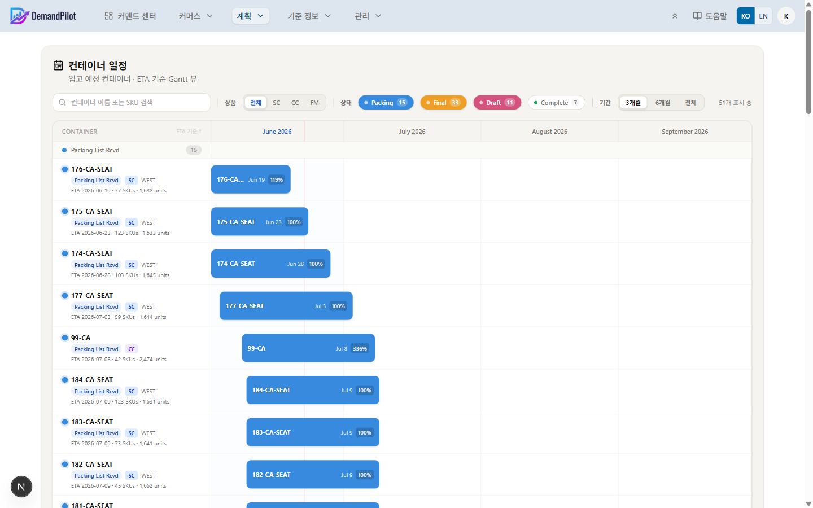
📅
Container Timeline 전체 화면
'" alt="Container Timeline 메인 화면">
▲ Container Timeline – ETA 기준 Gantt 뷰. 상태 필터 · 기간 필터 · 검색으로 표시 범위를 제어합니다.
① 화면 구성
🔍 필터 바
화면 상단에 검색창, 상태 필터 pills, 기간 선택 버튼이 위치합니다. 조건을 변경하면 Gantt 표가 즉시 업데이트됩니다.
📊 Gantt 표
좌측에 컨테이너 정보, 우측에 X축(날짜) 기준 입고 일정 바가 표시됩니다. 상태별로 색상이 구분됩니다.
📋 상세 드로어
Gantt 바 또는 행을 클릭하면 우측에 상세 패널이 슬라이드로 열립니다. SKU 목록, CBM 적재율, 메타 정보를 확인할 수 있습니다.
🚢 Container Planning 연결
상세 드로어 상단의 링크를 클릭하면 Container Planning 페이지의 해당 컨테이너로 바로 이동합니다.
② 필터 & 기간 설정
| 컨트롤 | 설명 |
|---|
| 🔍 검색창 | 컨테이너 번호, 공장명, 출발지·목적지 창고로 실시간 필터링합니다. |
| 상태 필터 pills |
Draft
Final
Packing
Complete
각 상태를 개별로 켜고 끌 수 있습니다. 최소 1개는 항상 활성 상태여야 합니다.
|
| 기간 버튼 (3M / 6M / 전체) |
3M – 오늘부터 3개월 이내 ETA 컨테이너만 표시하고, X축도 3개월로 고정합니다. (기본값)
6M – 6개월 이내 ETA 컨테이너와 X축 6개월.
전체 – 전체 기간의 ETA를 자동으로 계산해 모든 컨테이너를 표시합니다.
|
💡
Draft 상태를 숨기고 싶다면? 상단 필터 pills에서 Draft를 클릭해 비활성화하면 Draft 컨테이너가 Gantt에서 사라집니다. 같은 방식으로 Complete도 숨길 수 있습니다.
③ Gantt 바 읽기
Gantt 표는 상태별로 그룹화되어 표시됩니다. 각 행은 컨테이너 하나를 나타냅니다.
| 항목 | 설명 |
|---|
| 바(Bar) 색상 |
Draft 분홍 |
Final List Sent 주황 |
Packing List Rcvd 파랑 |
Complete 녹색
|
| 바의 길이 | 해상 운송 기간(약 30일)을 나타냅니다. 출발일부터 ETA까지가 바의 범위입니다. |
| 바의 위치 | X축의 날짜 기준으로 ETA 도착일에 오른쪽 끝이 맞춰집니다. |
| 좌측 정보 영역 | 컨테이너 번호, 공장명, 상태 뱃지, ETA 날짜, SKU 수, CBM 적재율 바가 표시됩니다. |
| 클릭 | 행 또는 Gantt 바를 클릭하면 우측 상세 드로어가 열립니다. |
④ 상세 드로어 (오른쪽 패널)

▲ 컨테이너 클릭 시 우측에 슬라이드로 열리는 상세 드로어 — SKU 목록, CBM 적재율, 메타 정보를 표시합니다.
| 항목 | 설명 |
|---|
| 메타 정보 그리드 | 컨테이너 번호, ETA, 공장, 출발지, 목적지 창고, 상태를 한눈에 정리해 표시합니다. |
| CBM 적재율 바 | 총 CBM / 컨테이너 용량 비율을 시각적 프로그레스 바로 표시합니다. 과적재 시 색상이 변합니다. |
| SKU 목록 테이블 | 이 컨테이너에 포함된 SKU별 수량(Qty)과 CBM을 표시합니다. 테이블 하단에 합계가 표시됩니다. |
| 메모(Note) | 컨테이너에 등록된 메모를 확인합니다. |
| Container Planning에서 열기 | 드로어 상단 링크를 클릭하면 Container Planning 페이지의 해당 컨테이너로 바로 이동합니다. |
| 닫기 (✕ 또는 배경 클릭) | 드로어 오른쪽 상단 ✕ 버튼 또는 드로어 바깥 영역을 클릭하면 닫힙니다. |
✏️
데이터 수정은 Container Planning에서: Container Timeline은 조회 전용 뷰입니다. 컨테이너 정보 수정이나 SKU 수량 변경이 필요하면 드로어 상단의 "Container Planning에서 열기" 링크를 통해 이동하세요.
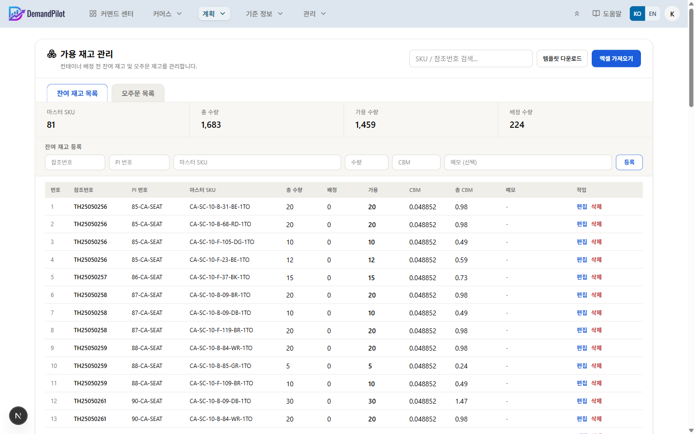
📦
Available Stock 화면
'" alt="Available Stock">
▲ Available Stock – Remaining List / Mistake Order 탭
탭 구성
📋 Remaining List
생산 완료 후 창고에 대기 중인 정상 재고입니다. TH 번호를 기준으로 관리합니다.
🔄 Mistake Order List
발주 오류·취소 등으로 발생한 여유 재고입니다. Remaining과 동일한 방식으로 관리합니다.
재고 등록하기
1
Reference No. 입력
TH 번호(예: TH-2024-001)를 입력합니다.
2
Master SKU 입력
SKU를 입력하면 SKU Master에서 CBM을 자동으로 가져옵니다.
3
수량 입력 후 Register
총 수량을 입력하고 Register를 클릭합니다.
수량 상태 이해하기
| 컬럼 | 의미 |
|---|
| Total Qty | 등록된 전체 수량 |
| Allocated Qty | 컨테이너에 이미 배정된 수량 (주황색으로 표시) |
| Available Qty | 아직 배정되지 않은 사용 가능 수량 (Total − Allocated) |
✅
일괄 등록: 📥 Import Excel 버튼을 사용하면 엑셀로 한 번에 여러 항목을 등록할 수 있습니다. 📄 Template으로 양식을 먼저 다운로드하세요.
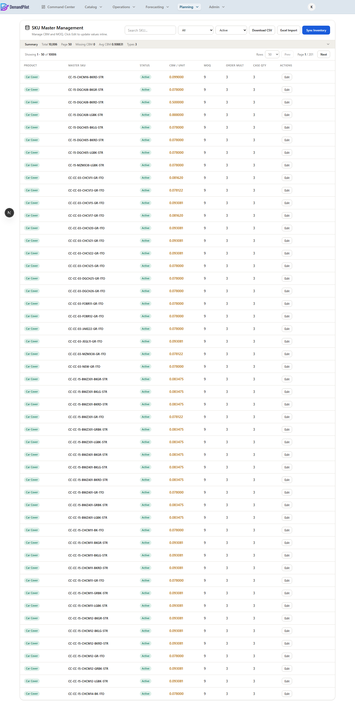
🗂️
SKU Master 화면
'" alt="SKU Master">
▲ SKU Master – 전체 SKU 목록 및 편집 화면
주요 컬럼 설명
| 항목 | 설명 | 예시 |
|---|
| Master SKU | 고유 SKU 식별자 | CA-SC-10-F-10-BK-1TO |
| CBM / Unit | 박스 1개당 부피(㎥). 발주 계산의 핵심 값. | 0.042500 |
| MOQ | 최소 발주 수량. 이 수량 미만으로 발주 불가. | 10 |
| Order Multiple | 발주 수량의 배수 단위 (예: 5 → 5, 10, 15, 20…) | 5 |
| Case Qty | 박스 1개에 들어가는 제품 수량 | 1 |
| Status | Active / Inactive – 비활성화 시 발주 계산에서 제외 | |
SKU 정보 수정하기
1
검색으로 SKU 찾기
상단 검색창에 SKU 이름 일부를 입력하거나 제품 타입 드롭다운으로 범위를 좁힙니다.
2
Edit 버튼 클릭
수정할 SKU 행의 Edit 버튼을 클릭하면 CBM·MOQ·배수·케이스 수량 필드가 편집 가능해집니다.
3
값 수정 후 Done 클릭
수정 완료 후 Done을 클릭하면 자동으로 저장됩니다.
💡
일괄 CBM 업데이트: Import Excel로 여러 SKU의 CBM을 한번에 업데이트할 수 있습니다.
🔄
재고 동기화: Sync Inventory를 누르면 외부 재고 DB(coverland_inventory)에서 최신 데이터를 가져옵니다.
| 용어 | 설명 |
|---|
| CBM | Cubic Meter. 박스 1개의 부피(㎥). 컨테이너 적재량 계산의 기준. |
| MOQ | Minimum Order Quantity. 한 번에 발주 가능한 최소 수량. |
| ETA | Estimated Time of Arrival. 컨테이너 도착 예정일. |
| SOD | Sell-Out Date. 현재 재고가 모두 소진되는 예상 날짜. |
| INV Life | Inventory Life. 현재 재고가 몇 일간 유지되는지 나타내는 지표 (재고 ÷ 일평균 판매). |
| Back Order | 재고 부족으로 발생한 미처리 수요. 음수 재고 상태. |
| Carryover | 컨테이너 도착 이후 남는 잔여 재고. |
| Transit Stock | 현재 운송 중인 재고 (아직 창고에 미입고). |
| Con. Qty | Container Quantity. 해당 컨테이너에 담을 발주 수량. |
| Gradient Tier | 📊 자동계산 버튼의 구간별 목표 일수 시스템. 각 구간은 최소 일판매량(Min Avg Sales)과 목표 재고 일수(Target Days)로 구성됩니다. 기본 4구간(≥10개→90일, ≥5개→80일, ≥3개→70일, 나머지→60일)이며 다이얼로그에서 자유롭게 변경할 수 있습니다. |
| Remaining List | 생산 완료 후 창고에서 입고 대기 중인 정상 재고 목록. |
| Mistake Order | 발주 오류·취소 등으로 발생한 잉여 재고 목록. |
Demand Pilot 사용자 매뉴얼 v1.0 · 2026.06 · shipcore.com
📦 Demand Pilot
User Manual
Operations guide for inventory planning, container management, and purchase quantity optimization for seat covers, car covers, and floor mats.
📊 Demand Planning
🔍 SKU Planning
🚢 Container Planning
📅 Container Timeline
📦 Available Stock
🗂️ SKU Master
Demand Pilot is an operations tool for managing e-commerce inventory — covering stock monitoring → purchase planning → container inbound management in one screen.
Menu Overview
Basic Workflow
1
Verify SKU Master
CBM (volume), MOQ, and order multiples must be correctly registered for purchase calculations to work. Always check this first when adding a new SKU.
2
Register Containers in Container Planning
Add inbound containers and enter the ETA (estimated arrival date). Manage SKU quantities as a packing list.
3
Plan Orders in Demand Planning
Review inventory status and container chains, then use auto-fill buttons to calculate optimal order quantities.
4
Allocate Surplus in Available Stock
Assign surplus inventory already in the warehouse (Remaining / Mistake Order) to containers to adjust inbound quantities.
5
Analyze Details in SKU Planning
Select a SKU to review its sales trends and estimated sell-out date.
Top Navigation Structure
The header contains four navigation groups. Click any group button to expand its dropdown menu.
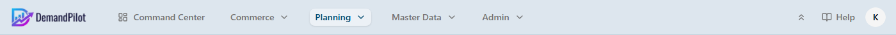
🔗
Top Navigation Bar
'" alt="Top Navigation">
▲ Top Navigation — Commerce · Planning · Master Data · Admin (4 groups)
| Commerce | Inventory · Orders · Velocity |
| Planning | Demand Planning · SKU Planning · Container Planning · Container Timeline · Available Stock |
| Master Data | SKU Master · Parts · Factories · Warehouse |
| Admin | Marketplace APIs · User Access |
Collapse Navigation & Floating Launcher
You can hide the top navigation to get more screen space. Click the ↑ button on the right side of the header to collapse the nav — a floating launcher will appear on screen.
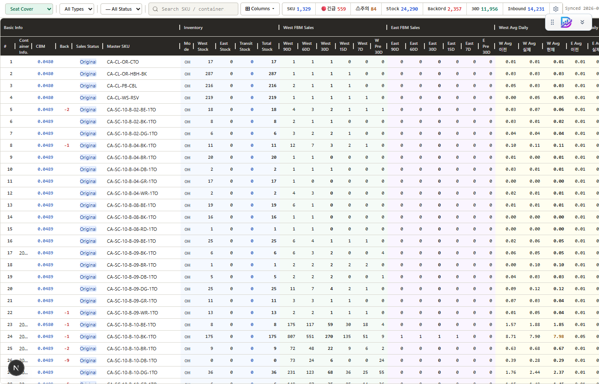
⊞
Floating Launcher
'" alt="Floating Launcher">
▲ Nav collapsed — the floating launcher appears as a fixed widget on screen
| ≡ Drag handle | Drag the launcher to any position on screen. Position is saved automatically. |
| Logo icon | Click to navigate to Home (Command Center). |
| ↓ Button | Click to restore the top navigation bar. |
| Hover preview | Hover over the launcher to see a navigation popup — click any link without restoring the full nav. |
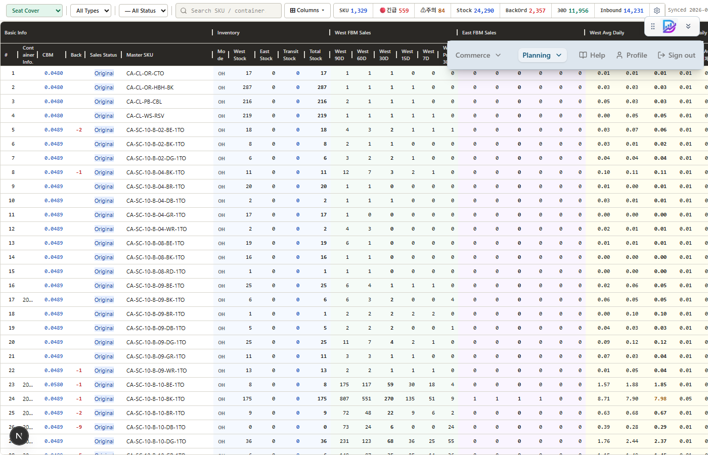
⊞
Launcher Hover Preview
'" alt="Launcher Hover Preview">
▲ Hover preview — hover over the launcher to see the navigation popup
💡 The nav collapsed/expanded state is saved to the server and persists across devices.
📊
Demand Planning Main Screen
▲ Demand Planning – Main Screen
'" alt="Demand Planning Main Screen">
▲ Demand Planning – Main Screen (Inventory Status + Container Chain)
① Filters & Search
| Control | Description |
|---|
| Product Dropdown | Select one of Seat Cover / Car Cover / Floor Mat / Accessories to show only that category's SKUs. The container list also filters automatically. |
| Product Type | Further filter SKUs as Original or Custom. |
| Urgency Filter | Filter to show only SKUs with Critical, Warning, or BackOrder status. |
| 🔍 Search | Real-time filter by SKU name or container number. |
| Con Qty Filter | Show only SKUs with an order quantity entered, or only those without one. Select All to clear the filter. |
| Date (As of) | View historical inventory status as of a specific date. Defaults to today. |
| Sync Button | Reload the latest inventory data from the server. |
| Export Button | Export the current filtered data as CSV. |
| Import Button | Bulk upload Transit Stock (in-transit inventory) via Excel. |
'" alt="Filters area">
SKU Part Filters (Per Product)
Depending on the selected product category, a different set of SKU part filters appears in the SKU Filters area of the Columns panel. Each dropdown supports multiple selections combined as AND conditions.
② Columns Panel
Click the ⊞ Columns ▾ button in the toolbar to open the panel. The panel has three areas (left: Quick Preset · Options · SKU Filters · Freeze Column; center: Column Visibility; right: Column Colors). All settings are auto-saved to the server and persist across sessions and devices.
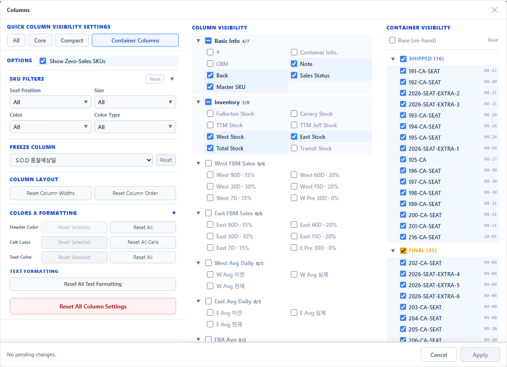
⊞
Columns Panel
'" alt="Columns Panel">
▲ Columns Panel — Left (Presets · SKU Filters · Freeze), Center (Visibility), Right (Colors)
Quick Preset — Fast Column Presets
Apply frequently used column combinations instantly with four buttons. The active preset is shown with a blue border.
| Button | Columns Shown | Notes |
|---|
| All | All column groups | Widest view. Default on first load. |
| Core | Basic Info · Inventory · Sales 30D · Total Avg Daily · Inbound/SOD + container columns | Hides per-warehouse daily sales groups. Focused on key metrics. |
| Compact | Essential columns only — Back · Sales Status · Master SKU · West/East/Total Stock · T.Avg · Inbound Qty · Containers List · Next ETA · S.O.D + container columns | Compact mode ON. Freeze Column resets to S.O.D. Useful on narrow screens. |
| Container Columns | Toggle all container sub-columns ON/OFF | Other columns unchanged. Blue border = all container columns visible. |
Column Visibility — Group & Individual Column Selection
The center area of the panel lets you control column groups and individual columns. Click a group header to collapse or expand it. The number next to each group (e.g., 5/6) shows visible / total columns.
| Group | Included Columns | Notes |
|---|
| Basic Info | # · Container Info. · CBM · Back · Sales Status · Master SKU | Always visible. Cannot be hidden. |
| Inventory | Mode · West Stock · East Stock · Transit Stock · Total Stock | Inventory figures. Mode switches the calculation basis: Onhand = raw warehouse stock count; Available = on-hand minus quantities allocated from Available Stock. |
| West FBM Sales | West 90D · 60D · 30D · 15D · 7D · W Pre 30D | West (FBM) sales by period. |
| East FBM Sales | East 90D · 60D · 30D · 15D · 7D · E Pre 30D | East (FBM) sales by period. |
| West Avg Daily | W Avg Prior · W Avg Actual · W Avg Current | West daily average (prior season / actual / currently applied). |
| East Avg Daily | E Avg Prior · E Avg Actual · E Avg Current | East daily average sales. |
| FBA Avg | FBA Actual · FBA Current | FBA channel daily average sales. |
| Sales 30D | W FBM 30D · E FBM 30D · FBA 30D · Total 30D | Last 30-day sales total by channel. |
| Total Avg Daily | T.Avg Prior · T.Avg Actual · T.Avg Current | All-channel daily average. Base value for Auto-Fill (📅/📊). |
| Inbound / Container / SOD | Inbound Qty · Containers List · Next ETA · S.O.D | Expected inbound total, container list, next ETA, estimated sell-out date. |
Container Columns
(shared sub-columns per container) | Con. Qty · Rem. Qty · Open Orders · Avail Qty · Est. Sales · Back Order · Carry over · Inv. Life · EST. SOD · Plan SOD · CBM | Controlled via Container Columns button or individual checkboxes. Sub-columns under each container header. |
🚢 Container Sub-Column Descriptions
| Con. Qty | Order quantity (directly editable) |
| Rem. Qty | Remaining Available Stock quantity |
| Open Orders | Unfulfilled order quantity |
| Avail Qty | Projected available stock after arrival |
| Est. Sales | Estimated sales volume by ETA |
| Back Order | Projected stock shortage (shown in red) |
| Carry over | Carryover inventory from previous container |
| Inv. Life | Days of inventory from this container's arrival |
| EST. SOD | Estimated sell-out date (based on ETA) |
| Plan SOD | Planned sell-out date |
| CBM | SKU Con. Qty × CBM/unit |
💡 Tips
- Disabling a group checkbox hides all columns within that group.
- After enabling a group, you can selectively hide individual columns.
- Compact preset is useful for keyboard-focused workflows — it nearly eliminates horizontal scrolling.
- Drag column header borders to resize. Use Reset Column Widths to restore defaults.
- Settings are saved to the server and persist across devices.
SKU Filters — SKU Part Filters by Product
A different set of SKU part filters appears depending on the selected product category. Each dropdown supports multiple selections combined as AND conditions. Use Reset (top-right) to clear all SKU filters at once.
🪑 Seat Cover (SC) — 4 Filters
| Filter Label | Description | Examples |
|---|
| Seat Position | Seat position (front/rear) | F, B, FB |
| Size | Size | 001, 042, 083 |
| Color | Color code | BK, GY, BE |
| Color type | Color type | 1TO, STI |
🚗 Car Cover (CC) — 5 Filters
| Filter Label | Description | Examples |
|---|
| Type | Product type | SC, UV, HD |
| Fabric | Fabric material | 2L, 3L, 4L |
| Size | Size | S, M, L, XL |
| Color | Color code | BK, SL, GY |
| Color Type | Color type | 1TO, STI |
🧩 Floor Mat (FM) — 7 Filters
Filters each part of the SKU code by position (SKU 1 – SKU 7).
| Filter Label | Description (SKU Part) |
|---|
| SKU 1 | Prefix |
| SKU 2 | Product Code |
| SKU 3 | Surface |
| SKU 4 | Material |
| SKU 5 | Vehicle Position |
| SKU 6 | Make |
| SKU 7 | Model # |
🎁 Accessories (AC) — 4 Filters
| Filter Label | Description | Examples |
|---|
| Seat | Seat position | F, B, FB |
| No. | Vehicle model number | 001, 042, 083 |
| Color | Color code | BK, GY, BE |
| Tone | Tone / variant | 1TO, STI |
ℹ️
Each dropdown shows only values that actually exist in the current category. Click All at the top of any dropdown to reset that filter.
ℹ️
Show Zero-Sales SKUs: Enable this checkbox at the top of Options to also show SKUs with zero sales in all periods. Default is OFF.
Freeze Column — Pin Columns
Pins all columns up to and including the selected column on the left. Frozen columns remain visible when scrolling right.
| Item | Description |
|---|
| Dropdown | Select the freeze endpoint from visible columns. All columns up to and including the selected one are pinned. |
| Default | S.O.D — pins Basic Info + Inventory + Inbound/SOD columns. Resets automatically when Compact preset is applied. |
| Reset button | Returns to the default (S.O.D) freeze point. |
💡
When there are many containers and horizontal scrolling is long, change Freeze Column to Master SKU to pin only the SKU name and give more room for container columns.
Column Colors — Assign Column Colors
Use the right area of the panel to assign header and cell background colors to specific columns. Useful for highlighting key columns or applying team color conventions.
A. Column-Level Colors
| Control | Description |
|---|
Column dropdown (#) | Select the column. Includes base columns, container headers (container:name), and container sub-columns (con:id). |
| Cell color | Background for all data cells in the selected column. Disabled for container headers. |
| Header color | Background for the header cell. Available for all columns. |
| Reset Selected | Clears color for the currently selected column only. |
| Reset All | Clears all column Cell and Header colors at once. |
| Reset Column Widths | Resets all column widths to default (unrelated to colors). |
B. Individual Cell Colors
Click a specific cell in the grid to load its info in the "SELECTED CELL COLOR" section. Then pick a color to change only that cell's background.
| Control | Description |
|---|
| Color picker | Set the background color for the clicked cell. |
No cell checkbox | When checked, removes any color from the selected cell. |
| Reset Selected | Clears the individual color from the currently selected cell. |
| Reset All Cells | Clears all individual cell colors at once. |
💡
Column colors and cell colors are independent. Individual cell colors override column colors for that cell only.
③ Con. Qty Auto-Fill Buttons
Each container header has 2 auto-fill buttons. All operate as preview before save — quantities update immediately but are only written to the database after clicking 💾 Save.
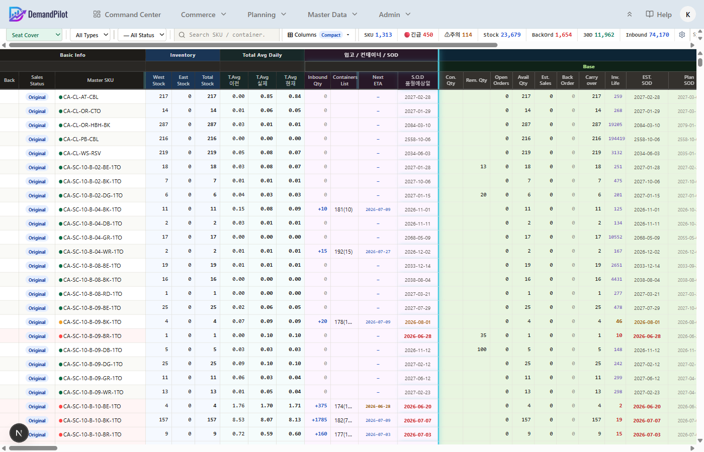
📅
Auto-Fill Button Area
'" alt="Auto-Fill buttons">
▲ Container header auto-fill buttons — ETA · number input · 📅 · 📊
UI Layout: Container headers display: ETA date → 90 (target days input) → 📅 → 📊.
The number input (90) is used by 📅 — 📊 does not use this value.
| Button | Function | Target Days | When to Use |
|---|
| 📅 |
Fixed Target Calculation
Order Qty = ROUNDUP((daily avg × target days + BackOrder − remaining stock) ÷ step) × step
※ BackOrder: cumulative back-order carried forward from the previous container · remaining stock: carryover from the previous container minus estimated sales before this ETA = max(0, carryover − daily avg × gap days) |
Uses number input value (default 90) |
When you want the same target days applied uniformly to all SKUs |
| 📊 |
Sales-Tier Calculation
Opens a dialog to assign different target days per daily sales range |
Per-tier dialog settings (default: ≥10/day→90d, ≥5/day→80d, ≥3/day→70d, others→60d) |
When high-velocity SKUs should have longer targets than slow-moving ones |
💡
Preview before saving: Both buttons apply quantities immediately but do not write to the database. Click 💾 Save to finalize. Click ↺ Reset to revert to the last saved database values.
Changing the 📅 Target Days
1
Click the number input in the container header
Default is 90. Enter your desired number of days (e.g., 60, 120).
2
Click 📅
Order quantities for all SKUs are recalculated using the entered days.
3
Click 💾 Save
Click Save to write results to the database.
Setting Per-Tier Targets with 📊
1
Click 📊
A dialog opens showing the current tier configuration.
2
Review and edit tier settings
Modify Min Avg Sales (minimum daily sales) and Target Days. Use + to add tiers and × to remove them.
| Default Tier | Min Avg Sales | Target Days |
|---|
| Tier 1 | ≥ 10/day | 90 days |
| Tier 2 | ≥ 5/day | 80 days |
| Tier 3 | ≥ 3/day | 70 days |
| Tier 4 (default) | ≥ 0/day | 60 days |
3
Click Apply
Each SKU's quantities are calculated using its matching tier's target days.
4
Click 💾 Save
Click Save to write results to the database.
✅
📊 tier settings persist for the session. Once configured, the same tiers apply when clicking 📊 on other containers until you leave the page. To use different tiers per container, edit the dialog each time.
④ Container Display Rules
Not all containers are shown in the Demand Planning grid. Containers are filtered as follows.
| Container Status | Shown in Demand Planning | Notes |
|---|
| Final List Sent | ✅ Always shown | Factory submission complete |
| Packing List Rcvd | ✅ Always shown | Packing list received |
| Draft | ⬜ Shown only when "Include Draft" toggle is ON | Must be manually enabled via the top filter |
| Complete | ❌ Not shown | Received containers are excluded from planning |
⑤ Double-Click Container Header — Jump to Container Planning
Double-click the container name area in any container header column of the Demand Planning grid to open that container's detail page in Container Planning in a new tab.
| Item | Description |
|---|
| Navigation URL | /forecast/planning/container-planning?containerId={id} — opens with that container already selected. |
| Cursor hint | The cursor changes to pointer when hovering over the container name to indicate it's clickable. |
| Unsaved containers | Containers not yet saved to the DB cannot be opened — an alert is shown: "This container does not have a saved container ID yet." |
💡
While reviewing order quantities in Demand Planning, double-click any container header to instantly open its full detail in Container Planning — no need to navigate manually.
⑥ Planning Settings — Seasonal Factors
Click the ⚙ icon (Seasonal factor settings) in the toolbar to open a popover for setting monthly seasonal multipliers. These multipliers are automatically applied to estimated sales and Inv. Life calculations based on the container's ETA month.
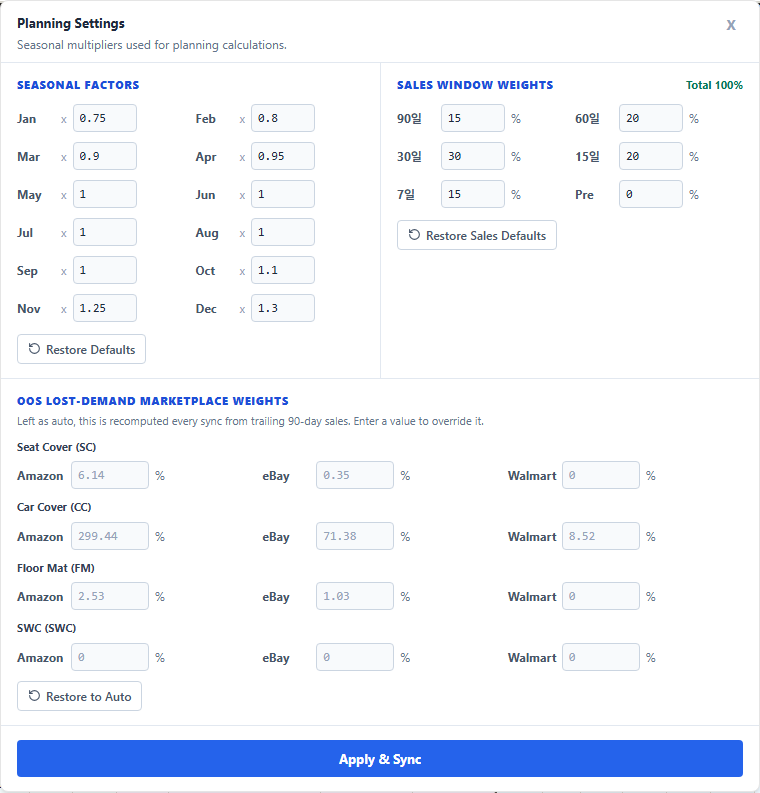
📅
Seasonal Factors Settings Popover
'" alt="Seasonal Factors Settings">
▲ Planning Settings — Seasonal Factors popover (Jan–Dec multipliers)
| Item | Description |
|---|
| Monthly multiplier input |
Enter a multiplier for each month (Jan–Dec). 1.0 is the baseline. Higher values assume greater demand in that month, resulting in more conservative inventory planning. |
| Restore Defaults |
Resets all monthly multipliers to their default values. |
| Auto-save |
Changes are saved to the browser immediately and synced to the server after 1.5 seconds. Settings persist across devices. |
| Month | Default | Month | Default |
|---|
| January | 0.75 | July | 1.00 |
| February | 0.80 | August | 1.00 |
| March | 0.90 | September | 1.00 |
| April | 0.95 | October | 1.10 |
| May | 1.00 | November | 1.25 |
| June | 1.00 | December | 1.30 |
💡
Example: A SKU with a daily sales rate of 10 units/day and a container ETA in November applies a seasonal factor of 1.25, giving an adjusted daily rate of 10 × 1.25 = 12.5 units/day. Inv. Life is calculated using this adjusted rate.
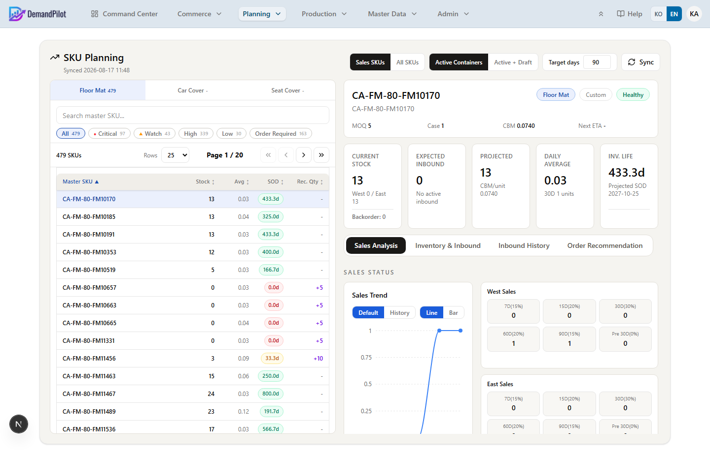
🔍
SKU Planning Main Screen
'" alt="SKU Planning">
▲ SKU Planning – Left SKU Browser + Right 4-Tab Detail Panel
Screen Layout
📋 Left Panel – SKU Browser (580px)
- SC / CC / FM product tab switching (with count badge)
- Search: real-time filter by SKU name, container number, or sales status
- Urgency filter badges (All / Critical / Watch / High / Low / Order Required)
- SKU list: view and sort by stock, daily sales, SOD, and recommended quantity
📊 Right Panel – SKU Detail
- SKU Header: name · product · status · MOQ · CBM · next ETA
- KPI Strip: 5 key metric cards
- Sales Analysis tab: sales trends by period
- Inventory & Inbound tab: stock coverage and inbound containers
- Inbound History tab: full historical inbound records by container
- Container Recommendation tab: recommended qty + What-If simulation
Top Global Controls
| Control | Description |
|---|
| Product Tabs (SC / CC / FM) | Select Seat Cover, Car Cover, or Floor Mat. Total SKU count shown next to the tab. |
| SKUs with Sales / All SKUs | Toggle. SKUs with Sales: show only SKUs with recent sales. All SKUs: include SKUs with no sales history. |
| Active Containers / Include Draft | Toggle. Active Containers: confirmed containers only. Include Draft: include Draft container inbound quantities in calculations. |
| Target Stock Days (1–365) | Sets the target inventory days for the Container Recommendation tab. Larger values increase the recommended order quantity. |
| 🔄 Sync | Reload the latest demand planning data from the server. |
| Language (KO / EN) | Switch all screen labels between Korean and English. Saved to localStorage. |
① Left SKU Browser Panel
Search and Filter Badges
Type a SKU name, container number, or partial sales status in the search box to narrow the list in real time. Urgency filter badges let you view only SKUs in a specific state.
| Filter Badge | Condition |
|---|
| All | All SKUs (no filter) |
| Critical | Urgency = Critical (stock nearly depleted) |
| Watch | Urgency = Watch (stock needs attention) |
| High | Urgency = Healthy (stock is adequate) |
| Low | SKUs where Back Order value is negative |
| Order Required | SKUs where Recommended Qty (Rec. Qty) > 0 |
SKU List Columns
| Column | Content |
|---|
| Master SKU | Unique SKU identifier. Click to load detail in the right panel. Click the column header to sort alphabetically. |
| Stock | Current total inventory (West + East). Click to sort. |
| Avg | Current daily average sales, 2 decimal places. Click to sort. |
| SOD | Days until sell-out, shown as a badge (e.g., D-5). Click to sort. |
| Rec | Recommended order quantity. Highlighted in purple when greater than 0. Click to sort. |
💡
Virtual Scrolling: The SKU list uses virtual scrolling (36px row height) so even thousands of SKUs render quickly. Narrow scope using the product tab or search if loading is slow.
② KPI Summary Cards (5)
Select a SKU to see five key metrics displayed as cards above the tabs.
📦 Current Stock
Total current warehouse inventory. West / East warehouse quantities shown separately below.
🚢 Inbound
Total expected inbound quantity. Shows Draft inclusion and nearest ETA. Displays "No active inbound" when none exists.
📈 Projected Stock
Projected inventory = current stock + inbound + back order impact. CBM/unit shown in subtitle.
📊 Daily Avg Sales
Current daily sales velocity. Subtitle shows total sales for the last 30 days (units).
⏱️ Inventory Life
Projected days of stock coverage and estimated SOD. When inbound exists, also shows "current stock only" days in urgency color.
⚠️
Include Draft toggle effect: Enabling Include Draft changes the inbound, projected stock, and inventory life figures to include Draft container quantities.
③ Sales Analysis Tab
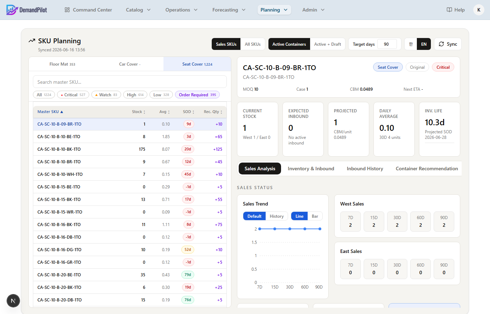
📈
Sales Analysis Tab
'" alt="Sales Analysis Tab">
▲ Sales Analysis Tab – Period Sales Trend Chart (Default View)
Review the selected SKU's sales data by period using charts and summary tables. Two modes: Default View and History View.
Default View – Period Summary
| Item | Description |
|---|
| Sales Trend Chart | Visualizes 7D/15D/30D/60D/90D sales as bar or line chart. Toggle between line / bar using the icon at the top-right of the chart. |
| West Sales Table | 5-row table showing West warehouse sales for 7D / 15D / 30D / 60D / 90D. |
| East Sales Table | Same structure for East warehouse. Side-by-side with West for regional comparison. |
| 3 Average Cards | Prior Avg · Actual Avg · Current Avg (currently applied daily avg, highlighted in blue) |
History View – Custom Date Range
Enable the History View toggle to show date range input fields.
| Item | Description |
|---|
| Date Range Input | Enter start and end dates manually. Use 2024-Today to set from 2024 to today in one click. |
| Aggregation Unit | Select Day / Week / Month. The chart X-axis interval changes accordingly. |
| Range Summary | Total sales and daily average for the selected period shown on the right. |
④ Inventory & Inbound Tab

▲ Inventory & Inbound Tab – Stock Coverage Bar + Inbound Container Cards
See how much stock is secured relative to the target days, and which containers are scheduled for inbound.
Inventory Summary Cards (4)
🏬 West Stock / East Stock
Current inventory by warehouse. When Include Draft is on, a Draft badge and the Draft-inclusive total are shown in orange.
⚠️ Back Order / SOD
Back Order: current stock shortage (shown in red when negative). SOD: estimated sell-out date with D-Day countdown.
Projected Coverage Progress Bar
| Item | Description |
|---|
| Coverage % | Ratio of projected inventory to target days. Example: 78% of 90-day target. Orange bar below 100%; green bar at or above 100%. |
| Projected / Target Qty | Shown below the bar as Projected {X} / Target {Y} units. |
| Target Days Reference | Reflects the Target Stock Days value from the top global controls. |
Inbound Container List
Lists all expected inbound containers that include this SKU as card entries.
| Item | Description |
|---|
| Container Name | Container number. Draft containers show a Draft badge with an orange card border. |
| Status | Current container status (Draft / Final List Sent / Packing List Rcvd / Complete). |
| ETA | Estimated arrival date. Sorted by nearest date first. |
| Qty | Inbound quantity assigned to this SKU. |
| CBM | Volume occupied by this SKU. |
| Card Click | Navigates directly to that container's Container Planning detail page. |
💡
Viewing Draft Containers: Set the top toggle to Include Draft to show unconfirmed Draft containers. This also affects the Projected Coverage bar figures.
Right Summary Cards (4)
Current Stock
Total current warehouse inventory.
Inbound / Inbound (incl. Draft)
Total expected inbound. Labeled "(incl. Draft)" when Draft is included.
Projected Stock
Current stock + inbound + back order impact.
Remaining / Error
Available Stock quantities: Remaining stock and Mistake Order amounts.
⑤ Inbound History Tab
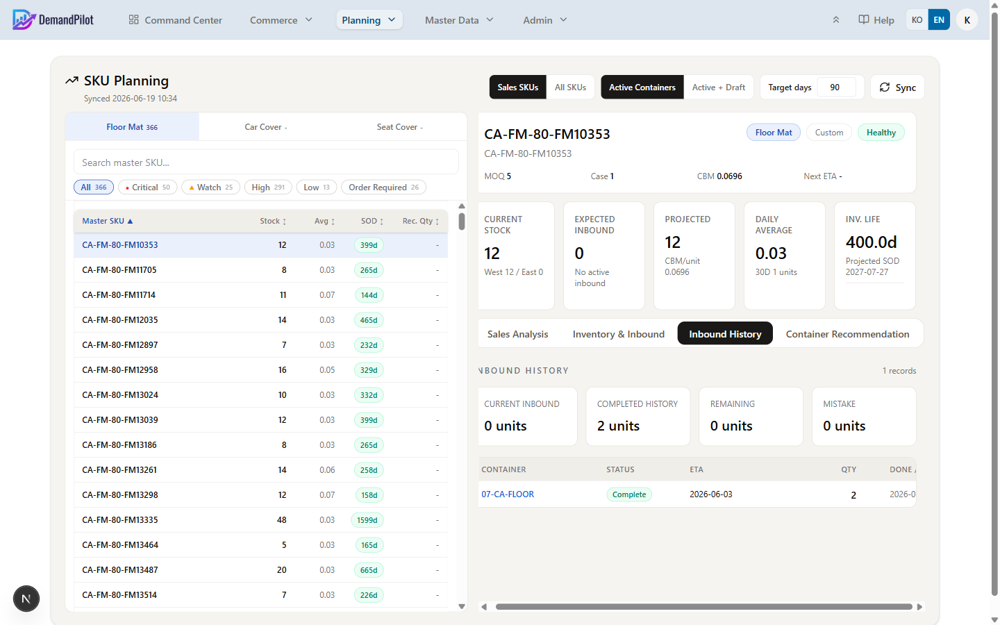
📋
Inbound History Tab
'" alt="Inbound History Tab">
▲ Inbound History Tab – 4 Summary Cards + Container History List
Shows the complete inbound history for the selected SKU by container — both active and completed. Use this tab to understand reorder cycles and past quantity patterns.
Summary Cards (4)
🚢 Current Inbound
Total units in containers with status Shipped or Packing Received (currently in transit).
✅ Completed History
Cumulative inbound units from containers that reached Complete status.
📋 Remaining
Remaining stock quantity registered in Available Stock.
⚠️ Mistake
Mistake Order quantity (from order errors or cancellations).
History List Columns
| Column | Description |
|---|
| Container Number | Container identifier. Click to navigate directly to that container's detail page in Container Planning. |
| Status | Current container status shown as a color-coded badge (Draft · Final List Sent · Packing List Rcvd · Complete). |
| ETA | Estimated arrival date. |
| Qty | Units allocated to this SKU in that container. |
| Done / Changed | Date the container was marked Complete, or the last modification date. |
💡
Click any Container Number link to jump directly to that container in Container Planning — convenient for reviewing history and making edits in one flow.
⑥ Container Recommendation Tab
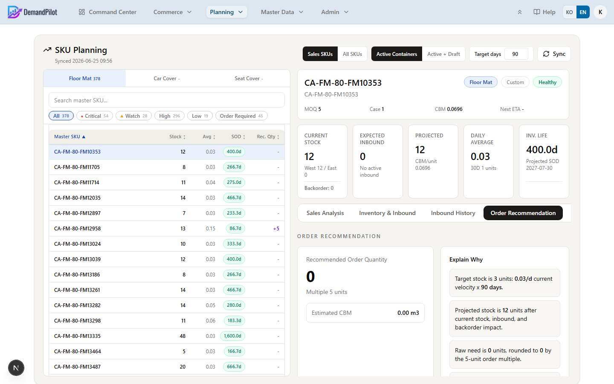
🛒
Container Recommendation Tab
'" alt="Container Recommendation Tab">
▲ Container Recommendation Tab – Recommended Qty · Simulation · Calculation Detail
Calculate the recommended order quantity based on target stock days and compare scenarios by entering custom quantities and ETAs.
Recommended Container Quantity
| Item | Description |
|---|
| Recommended Qty (large number) | Recommended inbound quantity with MOQ and order multiples automatically applied. Displayed in large purple text. |
| Order Multiple | The applied order multiple. Example: step 5 → 5, 10, 15 … |
| Estimated CBM | CBM volume required to load the recommended quantity (m³). |
Recommendation Basis (4 lines)
① Target Stock
Daily avg × target days = the target inventory to secure
② Projected Stock
Current stock + expected inbound + back order impact
③ Actual Need
Target stock − projected stock, rounded up (ROUNDUP) to the order multiple
④ Velocity Context
7D vs. 30D average comparison and rate of change (%). Indicates whether recent sales are accelerating or decelerating.
What-If Simulation
| Input | Description |
|---|
| Proposed Container Qty | Enter the quantity you intend to order. Adjust in order multiple increments. Initial value is the recommended quantity. |
| Hypothetical ETA | Set the expected arrival date with a date picker. Initial value is 90 days from today. |
| Reset to Recommended | Resets inputs to the system's recommended quantity and default ETA. |
Simulation Results (5 figures)
Demand Before ETA
Expected sales volume before arrival (daily avg × remaining days).
Back Order Before ETA
Back order if stock is depleted before ETA. Highlighted in warning color when greater than 0.
Back Order After ETA
Remaining back order after arrival. Greater than 0 still means a stock shortage.
Required CBM
CBM needed to load the entered order quantity.
Projected SOD
Estimated sell-out date under the simulation conditions.
Comparison Line: Below the simulation results, three figures appear side by side: Current SOD | Simulation SOD | Remaining after ETA — so you can immediately see the improvement over the current situation.
Calculation Detail (4-column grid)
| Item | Description |
|---|
| Target Days | Target inventory days set in the top controls |
| Daily Avg Sales | Current daily average sales velocity |
| Target Stock | = Daily avg × target days |
| Current Stock | Total current warehouse inventory |
| Inbound / Inbound (incl. Draft) | Total expected inbound (Draft inclusion labeled) |
| Back Order Impact | Current back order quantity (negative reduces projected stock) |
| Projected Stock | = Current stock + inbound + back order impact |
| Required Qty | = Target stock − projected stock (raw need before rounding) |
✅
MOQ & Order Multiple Auto-Applied: If the required quantity is less than MOQ, MOQ is applied automatically. The final recommended quantity is always rounded up (ROUNDUP) to the nearest order multiple. MOQ and order multiples must be set correctly in SKU Master.
'" alt="Container Detail">
▲ Container Planning – Draft filter selected · 202-CA-SEAT container selected
Container Status Flow
Draft
→
Final List Sent
→
Packing List Rcvd
→
Complete
① Creating a Container
1
Click + Add Container
Click the + Add Container button in the top-right of the screen.
2
Enter Basic Information
Enter the container number (e.g., 182-CA-SEAT), ETA, destination warehouse, and CBM capacity (default 80).
3
Add SKUs
Enter the Master SKU and register quantities. Bulk upload via Excel is also available (Import Excel).
4
Allocate Available Stock (optional)
To assign warehouse surplus to this container, use the Available Stock button.
5
Update Status
Change to Final List Sent once you send the order to the factory. Change to Packing List Rcvd when you receive the packing list.
'" alt="Container Planning">
▲ Container Registration – New Container Registration form (click + Add Container)
② Editing a Container
Draft containers can be freely edited — both basic details and the SKU list.
Editing Basic Information
| Field | Description |
|---|
| Container Number | Click directly in the Container Details section to edit. |
| ETA (Estimated Arrival) | Change via the date picker. |
| Destination Warehouse | Select from the dropdown. |
| CBM Capacity | Edit the total container capacity (default 80 m³). |
| Factory / Notes | Enter the factory name and any packing instructions or special notes. |
Adding SKUs
1
Enter Master SKU
Type the SKU code in the Master SKU search field at the bottom of the SKU Order Quantities section.
2
Enter Quantity
Fill in the order quantity in the Qty field. CBM/Unit is automatically looked up from the SKU master.
3
Click + Add
Click + Add to add the SKU to the list. To register multiple SKUs at once, use CSV/Excel Import.
Deleting SKUs (Bulk Delete)
Available in Draft containers only. Select SKUs using the row checkboxes and click Delete Selected (N).
| Item | Description |
|---|
| Individual selection | Check the checkbox on the left of each row. |
| Select all visible | Header checkbox (Select visible SKUs) selects all SKUs matching the current search filter. |
| Delete restriction | SKUs with Available Stock allocated cannot be deleted — remove the allocation first. |
| Confirmation dialog | "Delete N selected SKU(s)?" — click OK to proceed. |
| Status restriction | Draft only. The button is hidden for Final List Sent and above. |
⚠️
SKUs with Available Stock (Remaining / Mistake) allocated must have their allocation removed first via + Add Available Stock before deletion.
'" alt="Container Edit">
▲ Container Edit – Basic info and SKU add/delete panel (202-CA-SEAT · Draft status)
③ Status Details
| Status | Editable Fields | Shown in Demand Planning | Notes |
|---|
| Draft |
All fields editable |
✅ (Include Draft toggle ON) |
Draft stage. Edit freely. |
| Final List Sent |
Quantities only |
✅ Always shown |
After factory submission. Cannot add/remove SKUs. |
| Packing List Rcvd |
Read-only |
✅ Always shown |
After packing list received. No changes allowed. |
| Complete |
Read-only |
❌ Not shown |
Received. Fully excluded from Demand Planning. Deletion requires Planner/Admin. |
⚠️
Deleting a Container: Deleting an entire container requires Planner or Admin role. The delete option is available at the bottom of the container detail panel. Deleted containers and their SKU quantities cannot be recovered. If you just want to hide an incorrectly created container, keeping it as Draft is recommended instead of deleting.
④ Complete Status and Demand Planning Display Rules
⚠️
Complete containers are not shown in Demand Planning.
The moment a container is changed to Complete, it immediately disappears from the Demand Planning container column list and is excluded from per-SKU Con. Qty calculations.
This behavior exists because inventory from a received container is already reflected in the warehouse's live stock figures (Current Stock). Subsequent order planning should be recalculated against the updated live stock numbers.
🚫 Conditions that Exclude from Demand Planning
- Status = Complete
- Container column disappears; Con. Qty excluded from calculations
- Not reflected in Auto-Fill results (📅 / 📊)
- Not shown in SKU Planning › Inventory & Inbound container list
✅ Conditions that Show in Demand Planning
- Status = Final List Sent
- Status = Packing List Rcvd
- Status = Draft (only when Include Draft toggle is ON)
Demand Planning Changes When Status Transitions
Draft
→
Final List Sent
→
Packing List Rcvd
→
Complete ❌
The moment status changes to Complete, the container is removed from the Demand Planning container list.
| Situation | Recommended Action |
|---|
| Container has actually been received | Change to Complete → Excluded from Demand Planning automatically. Verify updated stock in Demand Planning's Current Stock column. |
| Accidentally set to Complete before actual receipt | Find the container in Container Planning and revert to Packing List Rcvd — it will immediately reappear in Demand Planning. |
| Need to review a Complete container's details | View it directly in Container Planning. Complete containers are not shown in Demand Planning or SKU Planning. |
✅
Correct Complete process:
- Confirm physical receipt, then click the container in Container Planning
- Change status to Complete
- After the external inventory DB syncs, click 🔄 Sync in Demand Planning
- Confirm the Current Stock figures have updated, then review the purchase plan
⚠️
CBM Overload Warning: Current CBM usage is shown at the top. Do not exceed 80 CBM.
⑤ Excel Export
Container Planning has two Export functions. Use each based on your purpose.
📊 Multi-Container Consolidated Export
Select multiple containers to compare and organize SKU quantities in one file. Used for Final Order compilation.
Button: Excel Export (N) in the top header
📋 Single Container Packing List Export
Export a single container's SKU list in packing list format.
Button: CSV/Excel at the bottom of the container detail panel
A. Multi-Container Consolidated Export (Excel Export)
Select multiple containers and export them as a single Excel file. Used to compare order quantities across containers or to deliver the Final Order to the factory.
1
Select Containers
Click the checkboxes on the left of the container list. Multiple selections allowed.
Use the Select visible checkbox to select/deselect all containers matching the current filter at once. Count shown as N selected.
2
Click Excel Export
Click the Excel Export (N) button (blue border). N is the number of selected containers. Disabled when 0 are selected.
3
File Downloads
The Excel file downloads automatically.
File Name Convention
{Product} ETA {M.DD.YYYY} ({First Container} - {Last Container} FINAL).xlsx
Example: Seat Cover ETA 8.15.2026 (SC-001 - SC-003 FINAL).xlsx
| File Name Element | How It Is Determined |
|---|
| Product | Single product category → that product name. Mixed categories → "Mixed Product". |
| ETA | The earliest ETA among selected containers, formatted as M.DD.YYYY. |
| Container Range | First to last container number after sorting. Shown identically for a single selection. |
Excel File Contents (Sheet: "Final Order")
| Column | Content |
|---|
| Product Type | Shows "Custom" for Custom SKUs. Blank for standard SKUs. |
| Master SKU | SKU code, sorted alphabetically. |
| [Container numbers] | One column per selected container with the SKU's quantity. Shows 0 if not included. |
| Remaining Stock | Sum of Available Stock Remaining quantity, fetched live at export time. |
| Total row | Sum of quantities for each container column. |
💡
Apply the Status / Product filter first, then use "Select visible" to quickly select containers of a specific product category or status.
B. Single Container Packing List Export (CSV/Excel)
Export an individual container's SKU list in packing list format. Used to share packing details with the factory or for internal review.
1
Open Container Detail
Click a container in the list to open the right detail panel.
2
Click CSV/Excel
Click CSV/Excel in the button area at the bottom of the detail panel.
This button is only shown for Draft and Final List Sent status. Hidden for Packing List Rcvd and above.
File Name Convention
container-{ContainerNumber}-{TodayDate}.xlsx
Example: container-SC-001-2026-06-15.xlsx
Excel File Contents (Sheet: "Packing List")
| Item | Content |
|---|
| Header Info | Container number, ETA, Factory, Destination, Notes, Status — output as 6 header rows |
| Master SKU | SKU code |
| Source | Quantity origin. If allocated from Available Stock: "Remain {ref} (N)". If entered directly: "Container / Manual". |
| Qty | SKU quantity in this container |
| CBM / Unit | CBM per unit for the SKU |
| Total CBM | Qty × CBM / Unit |
| Total row | Total quantity and CBM sum |
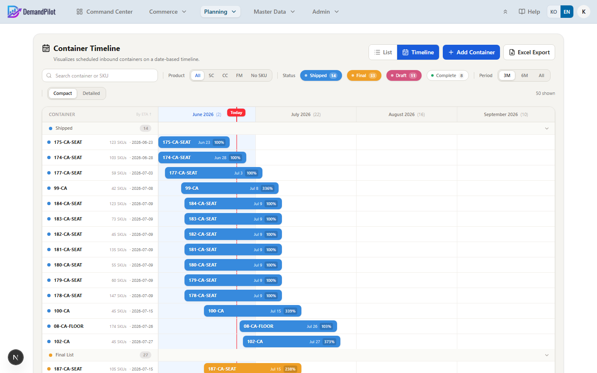
📅
Container Timeline Screen
'" alt="Container Timeline Main Screen">
▲ Container Timeline – ETA-based Gantt view. Use status filters, period buttons, and search to control what is displayed.
① Screen Layout
🔍 Filter Bar
Search box, status filter pills, and period buttons sit at the top of the screen. Change any setting and the Gantt table updates immediately.
📊 Gantt Table
Container info on the left; timeline bars aligned to the date X-axis on the right. Bars are color-coded by status.
📋 Detail Drawer
Click any Gantt bar or row to slide open a detail panel on the right. Shows the SKU list, CBM fill rate, and container metadata.
🚢 Container Planning Link
A link at the top of the detail drawer jumps directly to that container in Container Planning for editing.
② Filters & Period
| Control | Description |
|---|
| 🔍 Search | Real-time filtering by container number, factory name, or origin/destination warehouse. |
| Status filter pills |
Draft
Final
Packing
Complete
Toggle each status on or off individually. At least one must always remain active.
|
| Period buttons (3M / 6M / All) |
3M – Show only containers with ETA within the next 3 months; fixes the X-axis to 3 months. (Default)
6M – 6-month ETA window and X-axis.
All – Auto-calculates the full date range from data and shows every container.
|
💡
Want to hide Draft containers? Click the Draft pill in the filter bar to deactivate it — Draft containers disappear from the Gantt. You can hide Complete the same way.
③ Reading Gantt Bars
The Gantt table groups containers by status. Each row represents one container.
| Item | Description |
|---|
| Bar color |
Draft pink |
Final List Sent orange |
Packing List Rcvd blue |
Complete green
|
| Bar length | Represents the sea transit period (~30 days). The bar spans from the estimated departure date to the ETA. |
| Bar position | The right edge of the bar aligns with the ETA date on the X-axis. |
| Left info area | Shows container number, factory name, status badge, ETA date, SKU count, and a CBM fill-rate progress bar. |
| Click | Click a row or Gantt bar to open the detail drawer on the right. |
④ Detail Drawer (Right Panel)
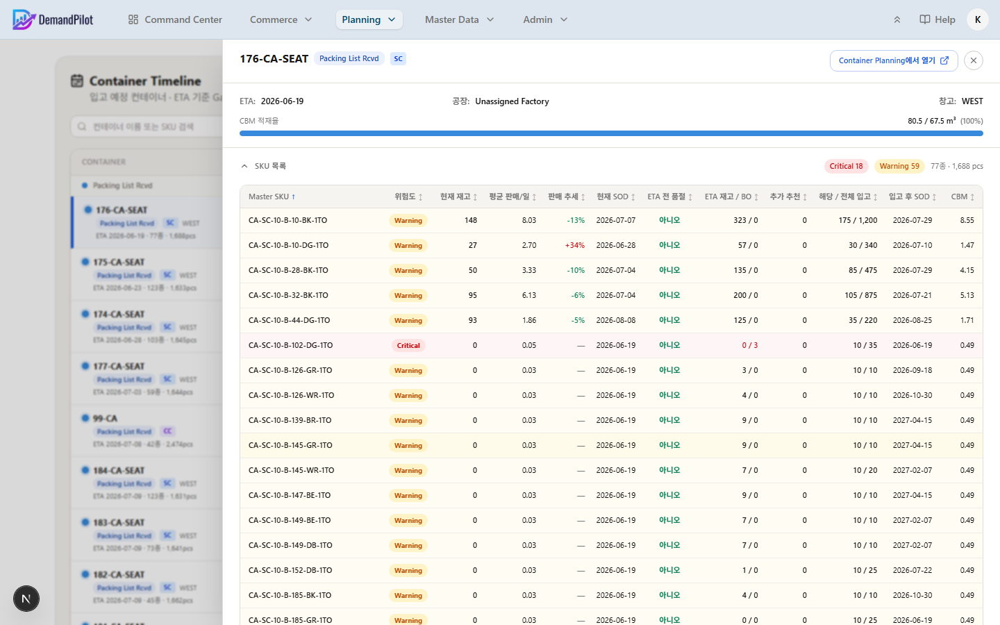
📋
Container Detail Drawer
'" alt="Container Timeline Detail Drawer">
▲ Detail drawer that slides open on the right when a container is clicked — shows SKU list, CBM fill rate, and metadata.
| Item | Description |
|---|
| Metadata grid | Container number, ETA, factory, origin, destination warehouse, and status — all in one compact grid. |
| CBM fill-rate bar | Visual progress bar showing total CBM vs. container capacity. Color shifts if over-packed. |
| SKU list table | Lists every SKU in this container with quantity (Qty) and CBM. Totals appear at the bottom of the table. |
| Note | Displays any notes attached to the container. |
| Open in Container Planning | Link at the top of the drawer — jumps directly to this container in Container Planning. |
| Close (✕ or backdrop click) | Click the ✕ button in the top-right corner of the drawer, or click outside the drawer to close it. |
✏️
Editing goes in Container Planning: Container Timeline is a read-only view. To edit container info or change SKU quantities, use the "Open in Container Planning" link at the top of the drawer.
'" alt="Available Stock">
▲ Available Stock – Remaining List / Mistake Order Tabs
Tab Overview
📋 Remaining List
Normal finished-goods inventory waiting in the warehouse after production. Managed using TH reference numbers.
🔄 Mistake Order List
Surplus inventory from order errors or cancellations. Managed the same way as Remaining.
Registering Inventory
1
Enter Reference No.
Enter the TH number (e.g., TH-2024-001).
2
Enter Master SKU
Entering a SKU automatically retrieves the CBM from SKU Master.
3
Enter Quantity and Click Register
Enter the total quantity and click Register.
Understanding Quantity Status
| Column | Meaning |
|---|
| Total Qty | Total registered quantity |
| Allocated Qty | Quantity already allocated to a container (shown in orange) |
| Available Qty | Unallocated quantity available for use (Total − Allocated) |
✅
Bulk Registration: Use 📥 Import Excel to register multiple items at once. Download the template first with 📄 Template.
'" alt="SKU Master">
▲ SKU Master – Full SKU List and Edit Screen
Key Column Descriptions
| Item | Description | Example |
|---|
| Master SKU | Unique SKU identifier | CA-SC-10-F-10-BK-1TO |
| CBM / Unit | Volume per box (m³). The core value for order calculations. | 0.042500 |
| MOQ | Minimum Order Quantity. Cannot order below this amount. | 10 |
| Order Multiple | Order quantity increment (e.g., 5 → 5, 10, 15, 20…) | 5 |
| Case Qty | Number of products per box | 1 |
| Status | Active / Inactive — Inactive SKUs are excluded from order calculations | |
Editing SKU Information
1
Find SKU via Search
Type part of the SKU name in the search box, or narrow scope with the product type dropdown.
2
Click Edit
Click the Edit button in the SKU row to make CBM, MOQ, multiple, and case quantity fields editable.
3
Edit Values and Click Done
Click Done after editing — changes are saved automatically.
💡
Bulk CBM Update: Use Import Excel to update CBM for multiple SKUs at once.
🔄
Inventory Sync: Click Sync Inventory to fetch the latest data from the external coverland_inventory DB.
| Term | Description |
|---|
| CBM | Cubic Meter. Volume per box (m³). The basis for calculating container load capacity. |
| MOQ | Minimum Order Quantity. The minimum quantity that can be ordered in one purchase. |
| ETA | Estimated Time of Arrival. The expected arrival date of a container. |
| SOD | Sell-Out Date. The estimated date when current inventory will be fully depleted. |
| INV Life | Inventory Life. How many days current inventory will last (Stock ÷ Daily avg sales). |
| Back Order | Unfulfilled demand resulting from insufficient inventory. A negative stock state. |
| Carryover | Residual inventory remaining after a container's arrival point. |
| Transit Stock | Inventory currently in transit (not yet received into the warehouse). |
| Con. Qty | Container Quantity. The order quantity to be loaded into a container. |
| Gradient Tier | The tiered target-days system used by the 📊 auto-fill button. Each tier pairs a minimum daily sales threshold (Min Avg Sales) with a Target Days value. Default: ≥10/day → 90d, ≥5/day → 80d, ≥3/day → 70d, others → 60d. Fully configurable via the tier dialog. |
| Remaining List | Normal finished-goods inventory waiting in the warehouse for inbound after production. |
| Mistake Order | Surplus inventory resulting from order errors or cancellations. |
Demand Pilot User Manual v1.0 · 2026.06 · shipcore.com